4 Containers en container images¶
4.1 Doelstellingen¶
Na dit hoofdstuk beheerst de student het volgende:
-
een Docker Hub-account aanmaken en er images opzoeken;
-
de opbouw van een imagenaam uitleggen: registry, naam en tag;
-
een RHEL 10-image (UBI) downloaden met Docker en met Podman, en uitleggen waarom Podman naar de registry vraagt;
-
de drie registries van Red Hat en Docker Hub van elkaar onderscheiden;
-
uitleggen hoe images uit lagen zijn opgebouwd en waarom lagen hergebruikt worden;
-
containers starten, opvolgen, stoppen en verwijderen met podman run, ps, logs, exec, stop en rm;
-
het verschil uitleggen tussen een container op de voorgrond, een interactieve container (-it) en een detached container (-d);
-
poorten van de server koppelen aan poorten in een container met de optie -p;
-
interactief een container opbouwen, bijvoorbeeld met een webserver of een DNS-server, en er met podman commit een image van maken;
-
een image bouwen met een Containerfile, met de instructies FROM, RUN, COPY, ENTRYPOINT, CMD, STOPSIGNAL en HEALTHCHECK;
-
uitleggen wat Buildah doet en hoe het zich verhoudt tot podman build;
-
een eigen image taggen, pushen naar Docker Hub en later weer pullen;
-
containers en images beheren via de webinterface Cockpit.
4.2 Inleiding¶
In dit hoofdstuk ga je zelf aan de slag met containers en container images. Je maakt een Docker Hub-account aan, downloadt een RHEL 10-image (UBI) en start er containers mee: eerst eenvoudige, daarna interactieve en containers die op de achtergrond draaien. Je leert containers beheren, stoppen en verwijderen, en je bouwt zelf images: eerst interactief, daarna met een Containerfile. Tot slot zet je een eigen image op Docker Hub en beheer je containers via de webinterface Cockpit.
4.3 Een Docker Hub-account aanmaken¶
Om een Docker Hub-account aan te maken, volg je deze stappen:
-
Ga naar Docker Hub
- Surf naar https://hub.docker.com.
-
Aanmelden
- Klik rechtsboven op de startpagina op de knop "Sign Up" (Registreren).
- Klik rechtsboven op de startpagina op de knop "Sign Up" (Registreren).
-
Vul je gegevens in.
-
Voer je e-mailadres, gebruikersnaam en wachtwoord in.
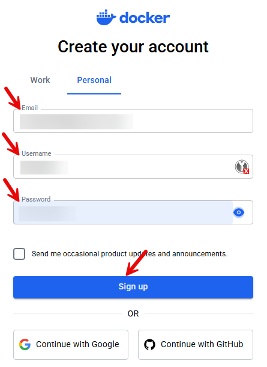
-
Je kunt je ook registreren met je GitHub- of Google-account voor een snellere aanmelding.
-
-
Bevestig je e-mail.
- Nadat je je gegevens hebt ingevuld, stuurt Docker Hub een verificatie-e-mail. Open deze e-mail en kopieer de verificatiecode.
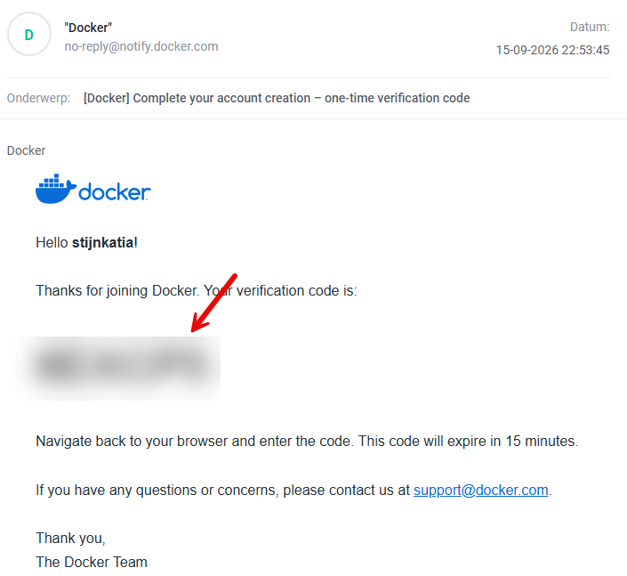
- Nadat je je gegevens hebt ingevuld, stuurt Docker Hub een verificatie-e-mail. Open deze e-mail en kopieer de verificatiecode.
-
Profiel voltooien
- Ga terug naar de browser en geef de code in.
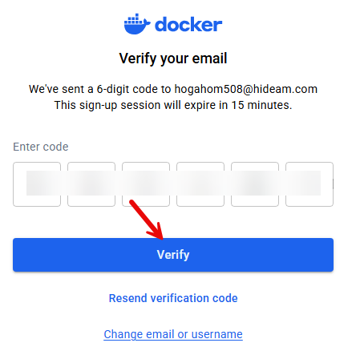
- Ga terug naar de browser en geef de code in.
-
Na de verificatie kun je inloggen bij Docker Hub.
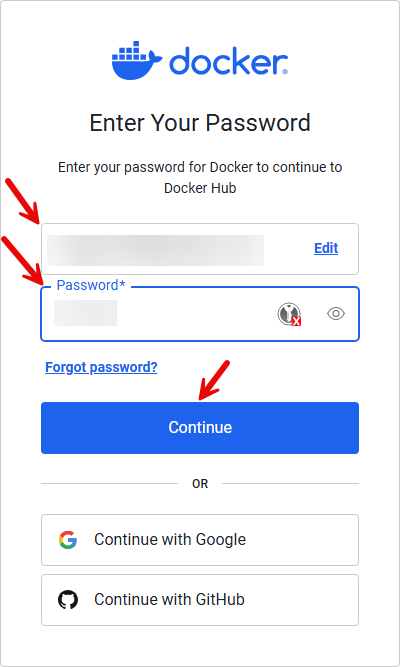
Zodra je klaar bent, kun je Docker Hub gebruiken om container images te hosten en te delen!
4.4 Een RHEL 10-image (UBI) downloaden¶
Red Hat biedt RHEL 10 aan als container image onder de naam UBI (Universal Base Image). UBI is de aanbevolen basis voor RHEL 10-containers. UBI-images zijn gratis en je mag ze vrij verspreiden, ook zonder Red Hat-account.
Je zoekt het image eerst op Docker Hub. Daarna download je het met Docker en met Podman, en zie je hoe beide tools met imagenamen en registries omgaan.
4.4.1 UBI-images zoeken op Docker Hub¶
Log je nu in op https://hub.docker.com met de gegevens die je juist hebt aangemaakt.
Typ in de zoekbalk bovenaan redhat in en druk op <Enter>.
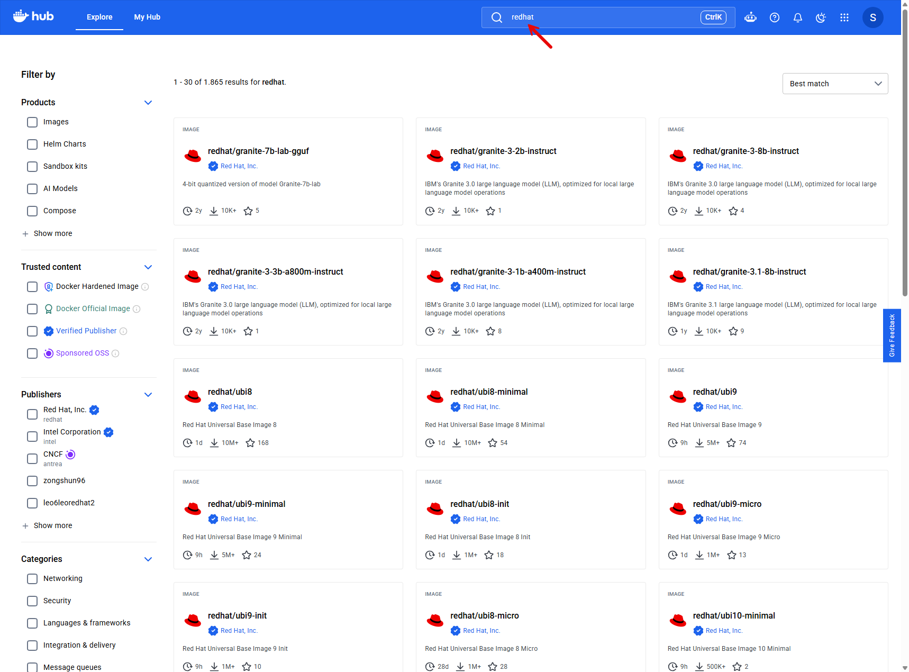
Je krijgt nu, zoals verwacht, vooral images van Red Hat als resultaat.
Klik op Red Hat, inc. bij één van je resultaten zoals je hieronder ziet.
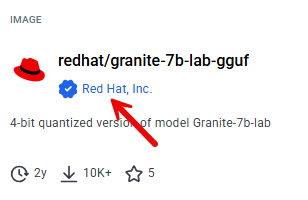
Je ziet nu enkel resultaten van Red Hat, Inc.
Je kan hier ook rechtstreeks naartoe gaan: Red Hat | Docker Hub.
Als je ubi10 in het zoekvenster intypt, zie je het onderstaande resultaat.
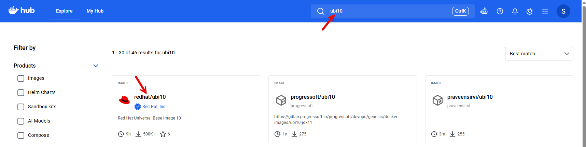
Als je ubi9 intypt, zie je het onderstaande resultaat.
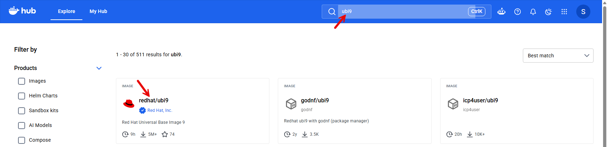
Zoals je kan raden, is ubi10 gebaseerd op RHEL 10 en ubi9 op RHEL 9.
Er zijn vier varianten van UBI 10, elk met een eigen doel en grootte:
-
redhat/ubi10: De standaard Universal Base Image 10.
-
redhat/ubi10-init: UBI 10 met systemd als init-systeem.
-
redhat/ubi10-minimal: Een afgeslankte versie van UBI 10.
-
redhat/ubi10-micro: De extreem minimalistische variant.
We bekijken redhat/ubi10 verder. Klik hiervoor op redhat/ubi10.
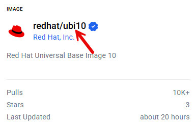
Klik op Tags.
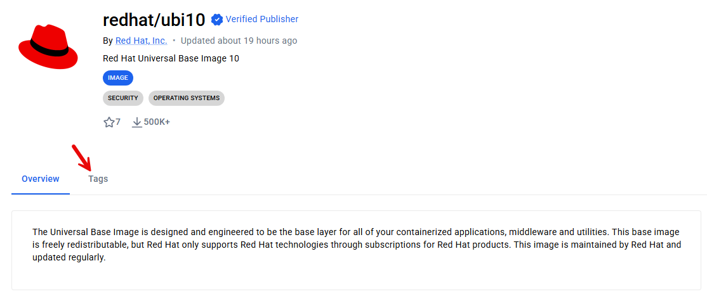
Een tag is een label dat verwijst naar een specifieke versie of variant van een image.
Een image wordt aangeduid als:
<image-naam>:<tag>
Meestal gebruik je de nieuwste versie. Die heeft de tag latest.
Je ziet hier de exacte syntax staan.
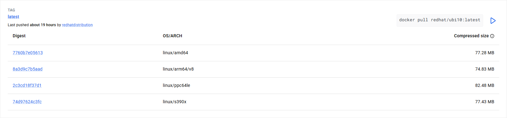
Een volledige imagenaam bestaat uit drie delen: de registry, de naam (repository) en de tag.
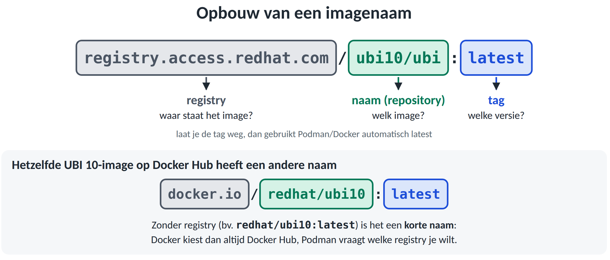
4.4.2 Het image downloaden met Docker¶
4.4.3 Voorbereiding: student uit de groep docker halen¶
Om het verschil tussen Docker en Podman te tonen, gebruik je Docker hier zonder dat student lid is van de groep docker. Is student toch lid van die groep, verwijder hem er dan uit.
student@serverXX:~$ groups student
student : student wheel docker
student@serverXX:~$ sudo gpasswd -d student docker
Gebruiker student wordt verwijderd uit groep docker
student@serverXX:~$ groups student
student : student wheel
De wijziging geldt pas nadat je opnieuw hebt ingelogd. In je huidige sessie toont groups nog de oude situatie. Meld je daarom af.
student@serverXX:~$ groups
student wheel docker # docker staat er nog bij
student@serverXX:~$ logout
Maak daarna een nieuwe SSH-verbinding met de server en controleer opnieuw.
student@192.168.112.100's password:
…
student@serverXX:~$ groups
student wheel
4.4.4 Pullen¶
Een image “pullen” betekent dat je een container image downloadt van een externe registry (zoals Docker Hub, dat wij gebruiken, of de registry van Red Hat) naar je lokale opslag. Daarna kan je er containers mee starten.
Probeer het image nu te downloaden met Docker. Je krijgt een foutmelding.
student@serverXX:~$ docker pull redhat/ubi10:latest
permission denied while trying to connect to the docker API at unix:///var/run/docker.sock
Student heeft geen toegang meer tot de Docker-daemon. Voer het commando daarom uit met sudo.
student@serverXX:~$ sudo docker pull redhat/ubi10:latest
latest: Pulling from redhat/ubi10
b16fd576ace9: Pull complete
Digest: sha256:6e3f045f5380e8d8dffaea7e01bf926d2db44aff751048697e780d1253687843
Status: Downloaded newer image for redhat/ubi10:latest
docker.io/redhat/ubi10:latest
Je gaf een korte naam op (redhat/ubi10:latest), zonder registry. Docker vult die zelf aan tot docker.io/redhat/ubi10:latest: zonder registry kiest Docker altijd Docker Hub.
Docker bewaart de images in submappen van /var/lib/docker.
4.4.5 Het image downloaden met Podman¶
Probeer nu hetzelfde image te downloaden met Podman. Hiervoor heb je geen sudo nodig.
student@serverXX:~$ podman pull redhat/ubi10:latest
? Please select an image:
▸ registry.access.redhat.com/redhat/ubi10:latest
registry.redhat.io/redhat/ubi10:latest
docker.io/redhat/ubi10:latest
Podman weet niet uit welke registry je wilt downloaden en laat je kiezen. Kies met de pijltjestoetsen registry.redhat.io/redhat/ubi10:latest en druk op <Enter>.
Je krijgt een foutmelding: registry.redhat.io vraagt een login.
✔ registry.redhat.io/redhat/ubi10:latest
Trying to pull registry.redhat.io/redhat/ubi10:latest...
Error: unable to copy from source docker://registry.redhat.io/redhat/ubi10:latest: initializing source docker://registry.redhat.io/redhat/ubi10:latest: unable to retrieve auth token: invalid username/password: unauthorized: Please login to the Red Hat Registry using your Customer Portal credentials. Further instructions can be found here: https://access.redhat.com/RegistryAuthentication
Meld je aan op deze registry met je Red Hat-account:
student@serverXX:~$ podman login registry.redhat.io
Username: stijnjacobs
Password:
Login Succeeded!
Probeer het image opnieuw te downloaden van registry.redhat.io.
student@serverXX:~$ podman pull redhat/ubi10:latest
? Please select an image:
registry.access.redhat.com/redhat/ubi10:latest
▸ registry.redhat.io/redhat/ubi10:latest
docker.io/redhat/ubi10:latest
✔ registry.redhat.io/redhat/ubi10:latest
Trying to pull registry.redhat.io/redhat/ubi10:latest...
Error: unable to copy from source docker://registry.redhat.io/redhat/ubi10:latest: initializing source docker://registry.redhat.io/redhat/ubi10:latest: reading manifest latest in registry.redhat.io/redhat/ubi10: unauthorized: access to the requested resource is not authorized
Dit werkt nog altijd niet, maar de foutmelding is anders: je bent ingelogd, maar je hebt geen toegang tot deze resource. Dat komt omdat redhat/ubi10 niet bestaat op registry.redhat.io. Daar heet het image ubi10/ubi.
Podman kan dus uit drie registries downloaden:
-
registry.access.redhat.com
-
De officiële registry van Red Hat die je zonder login kan gebruiken.
-
Bevat door Red Hat onderhouden en ondersteunde images.
-
-
registry.redhat.io
- Ook een registry van Red Hat, maar hier moet je inloggen met je Red Hat-account (zoals we net gemerkt hebben).
-
docker.io
-
Dit is de Docker Hub registry (waar we op de website gekeken hebben).
-
Images hier zijn meestal door Red Hat zelf gesynchroniseerd, maar soms wat minder up-to-date dan de officiële Red Hat registries.
-
Niet altijd de meest betrouwbare of ondersteunde bron.
-
De figuur hieronder zet de drie registries naast elkaar.
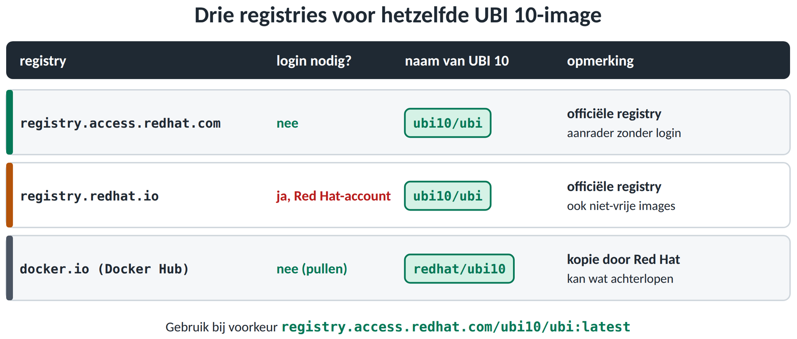
Probeer daarom opnieuw, maar nu met de Red Hat-naam ubi10/ubi.
student@serverXX:~$ podman pull ubi10/ubi:latest
Resolved "ubi10/ubi" as an alias (/etc/containers/registries.conf.d/001-rhel-shortnames.conf)
Trying to pull registry.access.redhat.com/ubi10/ubi:latest...
Getting image source signatures
Checking if image destination supports signatures
Copying blob b16fd576ace9 done |
Copying config 8bf6835ad2 done |
Writing manifest to image destination
Storing signatures
8bf6835ad2fd2692d116f067e02b04dd5b00dc49aa93edd8fb1b16f828c333de
Nu lukt het downloaden wel 😉. Podman stelt deze keer geen vraag: RHEL kent ubi10/ubi als alias (zie de regel Resolved … as an alias) en weet dus meteen dat het image op registry.access.redhat.com staat.
Je kan de registry ook meteen in de naam opgeven. Dan hoeft Podman niets te kiezen of op te zoeken.
student@serverXX:~$ podman pull registry.access.redhat.com/ubi10/ubi:latest
Trying to pull registry.access.redhat.com/ubi10/ubi:latest...
Getting image source signatures
Checking if image destination supports signatures
Copying blob b16fd576ace9 skipped: already exists
Copying config 8bf6835ad2 done |
Writing manifest to image destination
Storing signatures
8bf6835ad2fd2692d116f067e02b04dd5b00dc49aa93edd8fb1b16f828c333de
Tip: gebruik registry.access.redhat.com als je geen Red Hat-login hebt.
De figuur hieronder vat samen hoe Podman met korte namen omgaat.
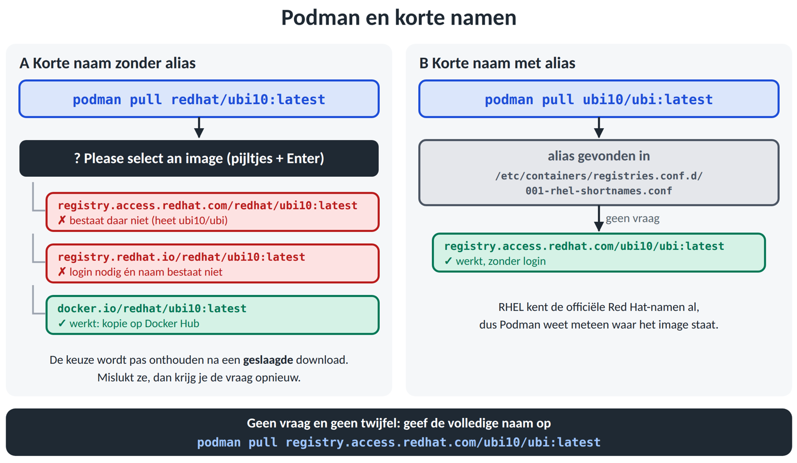
4.4.6 Images zoeken in de Red Hat-catalogus¶
De catalogus van registry.access.redhat.com vind je terug op https://catalog.redhat.com/en/search?searchType=containers.
Je kan jammer genoeg niet zoeken op ubi10. Zoek op ubi of op Red Hat Universal Base Image 10.
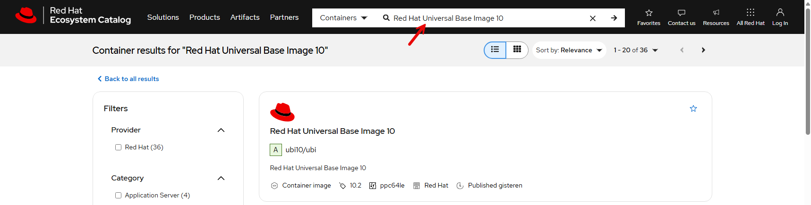
Klik nu op Red Hat Universal Base Image 10.
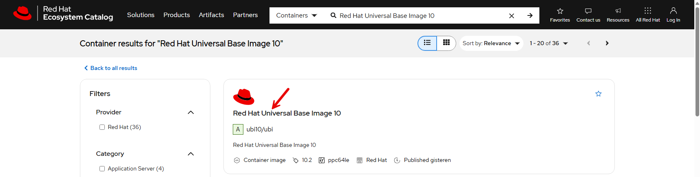
Je ziet nu allerlei info. Klik op Get this image.
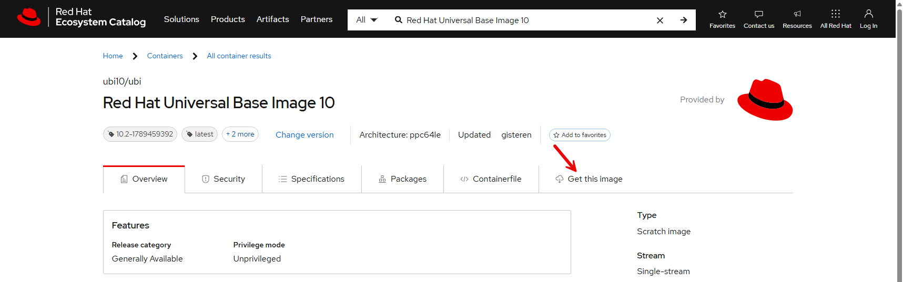
Klik nu op Unauthenticated aan de linkerkant.
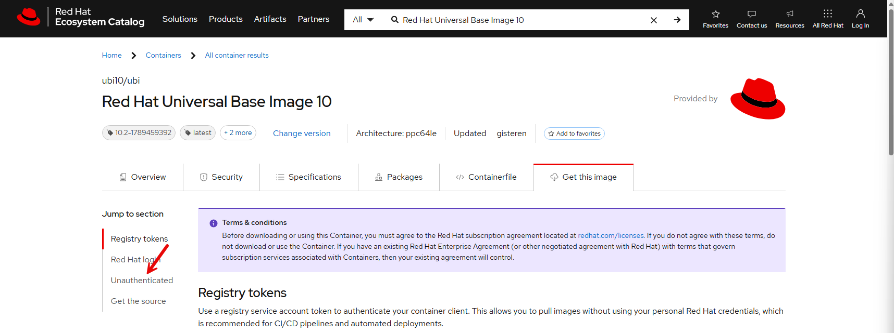
Je ziet op deze pagina hoe je het image kan downloaden.
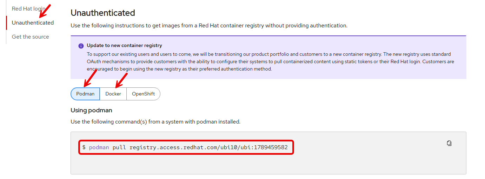
Na de dubbele punt (:) staat de tag (versie).
-
Je kan vaak latest gebruiken, maar hier staat een specifieke versie: 1789459582.
-
Gebruik bij voorkeur ubi10/ubi:latest. Dat is de officiële naam van het image en die werkt op alle registries van Red Hat (op registry.redhat.io na login).
4.4.7 Eén image, meerdere namen¶
Probeer ook eens de naam ubi10, zonder /ubi. Ook dat lukt zonder foutmelding.
student@serverXX:~$ podman pull ubi10:latest
Trying to pull registry.access.redhat.com/ubi10:latest...
Getting image source signatures
Checking if image destination supports signatures
Copying blob b16fd576ace9 skipped: already exists
Copying config 8bf6835ad2 done |
Writing manifest to image destination
Storing signatures
8bf6835ad2fd2692d116f067e02b04dd5b00dc49aa93edd8fb1b16f828c333de
Het image heeft dezelfde ID en was dus al gedownload: ubi10 is een alias van ubi10/ubi. Die alias werkt op beide registries van Red Hat. Samengevat:
-
ubi10:latest → de alias → werkt op beide registries (op registry.redhat.io na login).
-
ubi10/ubi:latest → de officiële naam → werkt ook op beide registries. Gebruik bij voorkeur deze naam: zo staat het image in de catalogus en in de documentatie van Red Hat.
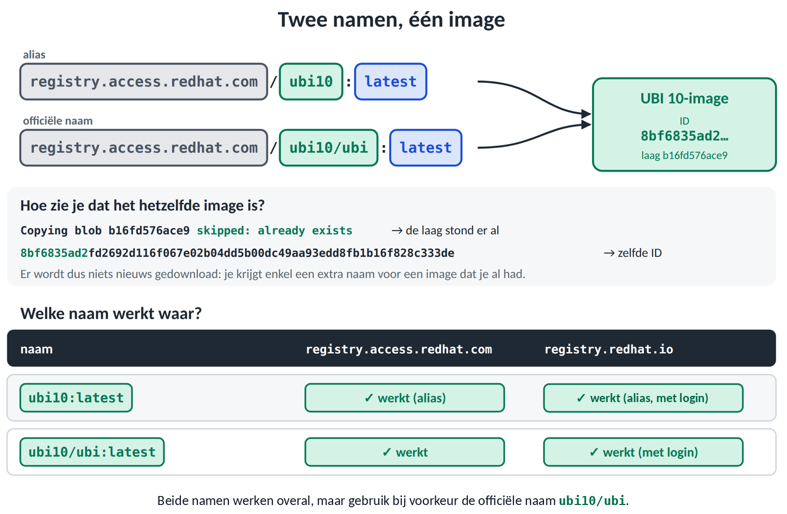
4.4.8 Lagen¶
Een image is opgebouwd uit lagen. Elke laag bevat wijzigingen of toevoegingen ten opzichte van de laag eronder.
Staan bepaalde lagen al op je systeem, bijvoorbeeld van een image dat je eerder hebt gedownload, dan worden ze hergebruikt. Alleen de nieuwe of gewijzigde lagen worden gedownload. Dat zag je hierboven al: bij de tweede download meldde Podman Copying blob b16fd576ace9 skipped: already exists.
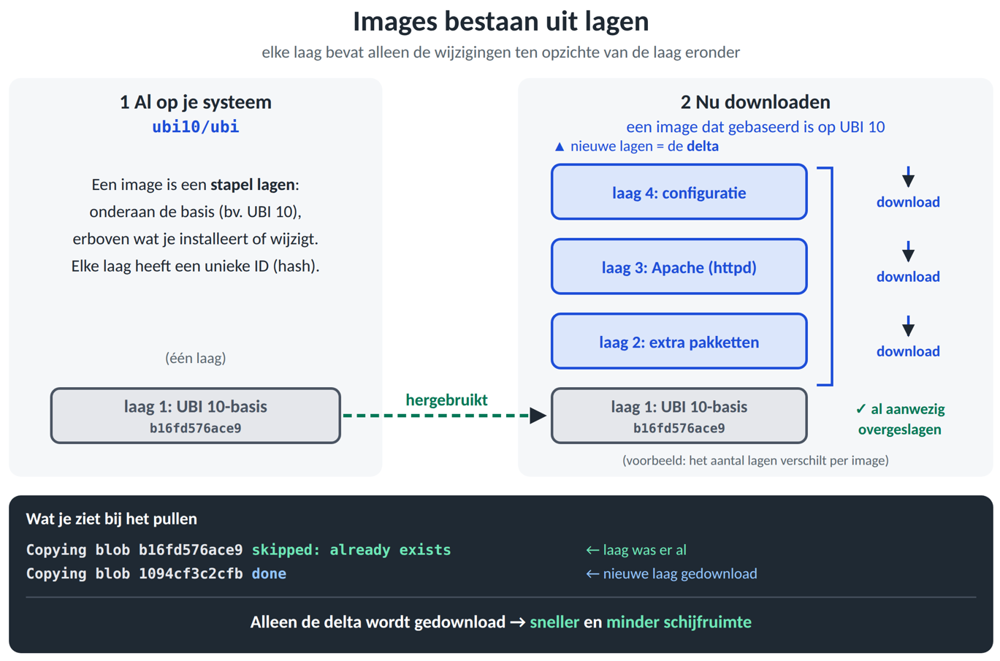
4.5 Podman-commando’s¶
4.5.1 Containers en container images downloaden, uitvoeren en logs bekijken¶
PS We voeren alle commando’s uit op de server.
Voer het volgende uit.
student@serverXX:~$ podman run ubi10/ubi:latest
-
podman run
Het Podman-commando dat een nieuwe container opstart op basis van een opgegeven image. Als het image nog niet lokaal aanwezig is, zal Podman deze eerst downloaden. -
registry.access.redhat.com/ubi10/ubi:latest
Dit is het image dat Podman gebruikt om de container te starten.-
ubi10/ubi
Dit is de Universal Base Image (UBI). Universal Base Image is een officiële, onderhoudbare en herdistribueerbare basisimage die je vrij mag gebruiken, zelfs in gesloten of commerciële projecten, zonder dat je per se een Red Hat-subscriptie nodig hebt. -
latest: Zoals reeds uitgelegd verwijst dit naar de laatste versie.
-
Podman maakt een nieuwe container op basis van dit image en start die. Je krijgt zo een geïsoleerde RHEL-omgeving waarin je RHEL-applicaties kan draaien. Omdat deze container niets te doen heeft, stopt hij onmiddellijk.
We zorgen er nu voor dat de container iets te doen heeft.
Voer het volgende uit.
student@serverXX:~$ podman run ubi10/ubi:latest whoami
root
-
De container wordt gestart: Podman start een nieuwe container op basis van de ubi10/ubi:latest-image.
-
Podman voert whoami direct uit als een proces binnen de container, zonder dat er een shell wordt gestart.
-
De container stopt: Zodra de opdracht is voltooid (whoami), zal de container stoppen, tenzij er specifieke opties zijn toegevoegd om de container draaiende te houden.
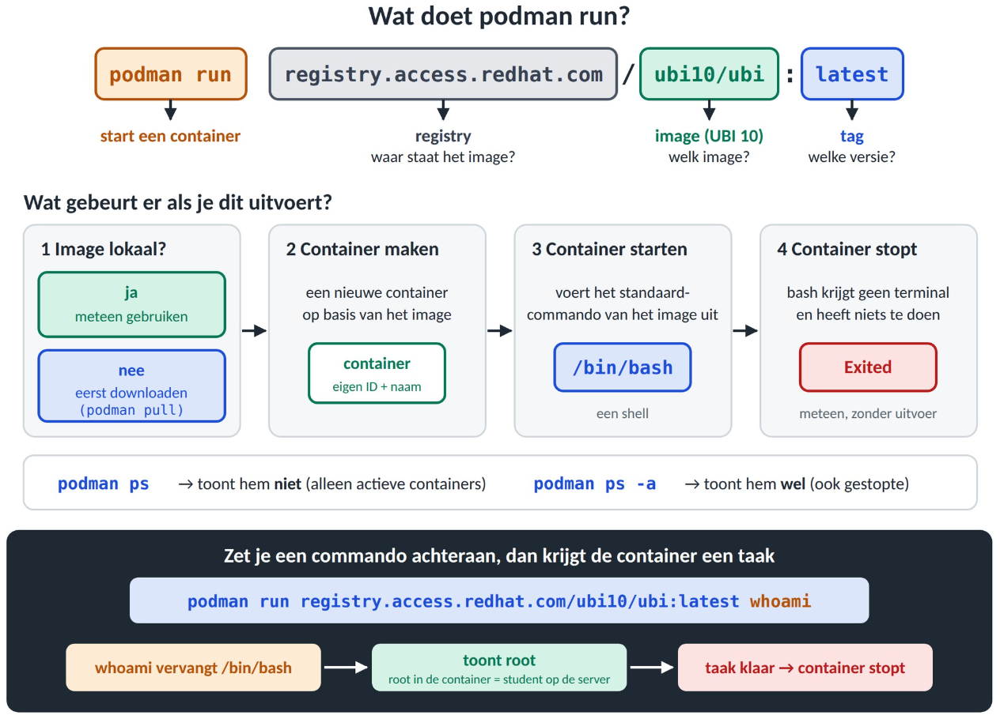
Het commando “podman ps” toont een lijst van actieve containers die momenteel draaien op je systeem. Standaard worden alleen de containers weergegeven die op dat moment actief zijn.
student@serverXX:~$ podman ps
CONTAINER ID IMAGE COMMAND CREATED STATUS PORTS NAMES
student@serverXX:~$
Als je een lijst wil tonen van alle containers, zowel actieve als gestopte containers, gebruik je onderstaande.
student@serverXX:~$ podman ps -a
CONTAINER ID IMAGE COMMAND …
…
3f9fa2c21088 registry.access.redhat.com/ubi10/ubi:latest whoami …
Om een container te starten die al eens actief is geweest, gebruik je de unieke container-ID.
Hier zie je bijvoorbeeld dat de container die het commando “whoami” uitvoerde, de ID 3f9fa2c21088 heeft.
Je kan deze container als volgt opnieuw starten.
student@serverXX:~$ podman start 3f9fa2c21088
3f9fa2c21088
Je hoeft niet de volledige container-ID in te geven. Een deel van de ID volstaat, zolang dat deel uniek is. Je kan ook de naam van de container gebruiken.
Podman laat je dus meestal toe om alleen de eerste paar tekens van die ID te gebruiken, zolang er geen andere container is met een ID die begint met dezelfde tekens.
student@serverXX:~$ podman start 3f
3f
Als je terug de actieve containers opvraagt, krijg je het onderstaande resultaat.
student@serverXX:~$ podman ps
CONTAINER ID IMAGE COMMAND CREATED STATUS PORTS NAMES
De container heeft zijn taak immers al uitgevoerd en is weer gestopt.
Je kan logbestanden van een container bekijken.
student@serverXX:~$ podman logs 3f
root
root
root
-
podman logs: Dit Podman-commando toont de standaard output (stdout) en foutmeldingen (stderr) die door de container worden gegenereerd sinds het opstarten van de container. Dit is nuttig om te zien wat er binnen de container gebeurt, zoals foutmeldingen, uitvoer van scripts, of andere meldingen.
-
3f: Dit is weer de gedeeltelijke container-ID van de container waarvan je de logs wilt zien.
-
Als 3f de eerste tekens van een unieke container-ID zijn, werkt het commando.
-
Als meerdere containers dezelfde eerste tekens hebben, moet je meer van de ID invoeren.
-
Je kunt ook een eigen containernaam gebruiken als je de container een naam hebt gegeven toen je hem startte. Daar komen we later op terug.
-
We bekijken nu welke bestanden en mappen er in de rootmap van de container staan met het commando ls (zonder pad). Net zoals daarnet voegen we het commando achteraan toe.
student@serverXX:~$ podman run ubi10/ubi:latest ls
afs
…
var
Tonen we nu opnieuw alle containers (actief of gestopt), dan zie je dat deze container erbij gekomen is.
student@serverXX:~$ podman ps -a
CONTAINER ID IMAGE COMMAND …
…
3f9fa2c21088 registry.access.redhat.com/ubi10/ubi:latest whoami …
0444ba18e5e2 registry.access.redhat.com/ubi10/ubi:latest ls …
We vragen nu de logs op van de juist uitgevoerde container.
student@serverXX:~$ podman logs 04
afs
…
var
4.5.2 Een interactieve container uitvoeren¶
Misschien wil je niet dat een container zijn taak uitvoert en daarna meteen stopt.
Soms heb je een container nodig die een tijd actief blijft. Zo kan je ook verbinding maken met de container om beheertaken uit te voeren, zoals je dat op een RHEL-server zou doen.
Een interactieve container:
-
Dwingt de container om door te blijven draaien.
-
Geeft toegang tot de console van de container.
Door -it toe te voegen, start je een container die blijft draaien.
student@serverXX:~$ podman run -it ubi10/ubi:latest
-it is een samentrekking van -i en -t.
-i betekent interactive.
Deze houdt de standaardinvoer open, ook als je er niets naar stuurt.
-t geeft je een terminal (TTY).
Meestal worden -i en -t gecombineerd.
Na het uitvoeren van bovenstaande opdracht zit je in de container.
Voer nu whoami uit.
[root@594bc4040809 /]# whoami
root
Voer nu ‘ls’ uit.
[root@594bc4040809 /]# ls
afs bin boot dev … tmp usr var
Voer nu ‘cat /etc/hostname’ uit.
[root@594bc4040809 /]# cat /etc/hostname
594bc4040809
Uiteraard zie je de naam van de container (hostname) ook na @ staan in je huidige prompt.
Voer nu “cat /etc/os-release” uit.
[root@594bc4040809 /]# cat /etc/os-release
NAME="Red Hat Enterprise Linux"
VERSION="10.2 (Coughlan)"
…
Open nu een tweede venster, maak met ssh verbinding met serverXX en kijk of er containers actief zijn.
student@serverXX:~$ podman ps
CONTAINER ID IMAGE COMMAND …
594bc4040809 registry.access.redhat.com/ubi10/ubi:latest /bin/bash …
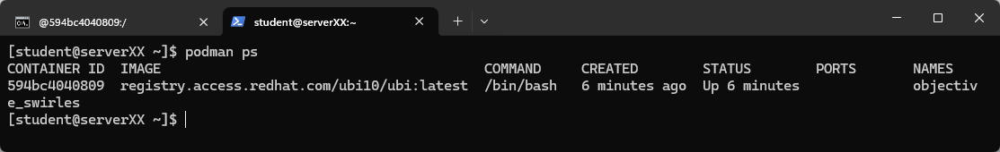
Je ziet dat de hostname van de container en de container-ID standaard hetzelfde zijn.
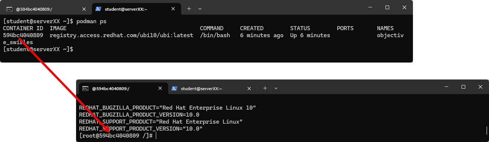
Sluit de container nu af (eerste venster) door in de container exit in te typen.
[root@594bc4040809 /]# exit
Toon daarna terug de actieve containers.
student@serverXX:~$ podman ps
CONTAINER ID IMAGE COMMAND CREATED STATUS PORTS NAMES
De container is gestopt en staat dus niet meer in de lijst.
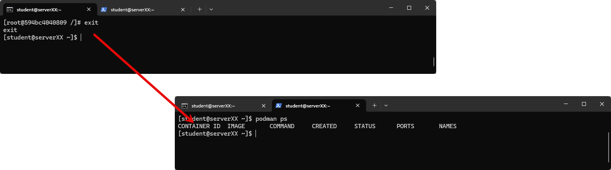
Er zijn twee belangrijke manieren waarop je een container kunt draaien: interactief en detached. Hier is het verschil tussen beide:
-
Interactieve container
Bij het draaien van een container in interactieve modus, krijg je direct toegang tot de terminal binnen de container. Dit stelt je in staat om direct met de container te communiceren. -
Detached container
Bij het draaien van een container in detached modus, wordt de container op de achtergrond uitgevoerd zonder dat je er direct interactie mee hebt via de terminal.
4.5.3 Een detached container uitvoeren¶
Start nu een detached container.
student@serverXX:~$ podman run -d ubi10/ubi:latest tail -f /dev/null
035e6040adf0620bae7322eeb27760768cf80c0d1877bb52e81629bfec7f7698
De container zal nu draaien op de achtergrond.
--detach (of -d)
Deze vlag zorgt ervoor dat de container in de achtergrond begint te draaien.
tail -f /dev/null
Dit is het commando dat in de container wordt uitgevoerd. Een container die niets te doen heeft, sluit zichzelf af!
Dit is het daadwerkelijke commando dat wordt uitgevoerd binnen de container nadat deze is gestart. Laten we het opsplitsen:
tail: dit commando toont normaal de laatste regels van een bestand.
-f: betekent “follow”, dus blijf luisteren naar nieuwe regels die aan het bestand worden toegevoegd.
/dev/null: een speciaal bestand dat altijd leeg is. Alles wat je erin schrijft, verdwijnt (daarom ook de bit bucket genoemd).
tail -f /dev/null start een proces dat eindeloos blijft draaien en nooit output geeft.
Je zal dus ook zien dat de container nog draait.
student@serverXX:~$ podman ps
CONTAINER ID IMAGE COMMAND …
035e6040adf0 registry.access.redhat.com/ubi10/ubi:latest tail -f /dev/null …
Je ziet het commando ook bij COMMAND staan.
We bekijken nu de log van deze container.
student@serverXX:~$ podman logs 03
Je ziet dat er niets in het log staat aangezien tail -f /dev/null geen output heeft.
Open nu een shell in de container die nog draait.
student@serverXX:~$ podman exec -it 03 /bin/bash
[root@035e6040adf0 /]#
We vragen nu op welke shell we draaien.
[root@035e6040adf0 /]# echo $SHELL
/bin/bash
Verlaat de container door exit in te typen.
[root@035e6040adf0 /]# exit
exit
student@serverXX:~$
De container voert nog steeds op de achtergrond “tail -f /dev/null” uit.
student@serverXX:~$ podman ps
CONTAINER ID IMAGE COMMAND …
035e6040adf0 registry.access.redhat.com/ubi10/ubi:latest tail -f /dev/null …
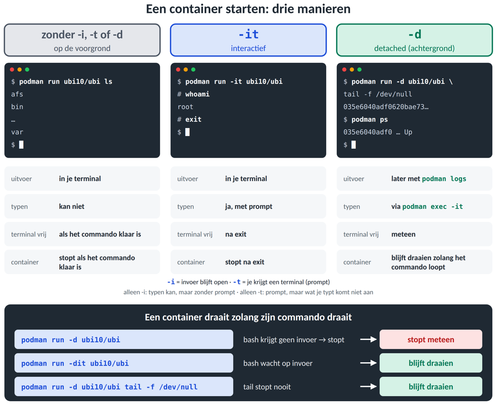
4.5.4 Info over een image opvragen¶
Gedetailleerde informatie over een image vraag je op met podman image inspect.
student@serverXX:~$ podman image inspect ubi10/ubi:latest
[
{
"Id": "8bf6835ad2fd2692d116f067e02b04dd5b00dc49aa93edd8fb1b16f828c333de",
…
We bespreken hier beknopt een aantal velden.
Veld Layers: Dit toont de verschillende lagen (met hun hashes) waaruit het image is opgebouwd.
"RootFS": { "Type": "layers", "Layers": [ "sha256:0860dc9dcd726a624fb5f82f4e19ab797fc18ea5a5b18b56466fb9b0ab2cd73b" ] },Elke laag kan veranderingen bevatten, zoals toegevoegde bestanden of gewijzigde configuraties. Bij Docker en Podman zie je vaak meerdere lagen. Docker en Podman gebruiken een gelaagd bestandssysteem om efficiënt om te gaan met data, waarbij lagen worden gedeeld tussen images als er geen verschillen zijn. Hier is er maar één laag: Red Hat bouwt het UBI-basisimage als één enkele laag.
We pullen een ander image om meer lagen te zien.
student@serverXX:~$ podman pull ubi10/httpd-24
…
student@serverXX:~$ podman image inspect ubi10/httpd-24
"RootFS": {
"Type": "layers",
"Layers": [
"sha256:207653de1e264a29b9108b5159933c08276f43fcddcc0135724bd9343c98fdff", "sha256:0a1f5b28c224946794612ef052171c1adbbbc26cf615f7e3ac11b648af79f946", "sha256:a8b61e8ff84a168a87987f16df2ee426fbd06604bb5e99929a9418d87a6136a4"
]
},
Velden Architecture, Os en OsVersion
"Architecture": "amd64",
"Os": "linux",Het veld Architecture geeft aan voor welke hardware architectuur het image bedoeld is.
Het veld Os geeft aan voor welk besturingssysteem het image is bedoeld. Dit kan Windows of Linux zijn.
Het veld OsVersion (indien aanwezig) geeft de specifieke versie van het besturingssysteem aan waarop het image is gebaseerd. Dit veld is vooral van belang voor Windows-containers, omdat er verschillende versies van Windows Server en Windows-besturingssystemen zijn die invloed hebben op de compatibiliteit van het image. Dit vind je hier dan ook niet terug.
- Veld Entrypoint
Het UBI10 base image heeft geen Entrypoint gedefinieerd. UBI10/httpd-24 heeft dat wel.
"Entrypoint": [ "container-entrypoint" ],Het entrypoint definieert het vast deel van het commando dat altijd wordt uitgevoerd wanneer een container start.
- Veld Cmd
Het UBI10 base image heeft als Cmd /bin/bash. UBI10/httpd-24 heeft /usr/bin/run-httpd als Cmd.
"Cmd": [ "/bin/bash" ],Cmd is het standaardcommando dat de container uitvoert bij het starten. Heeft het image een Entrypoint, dan wordt Cmd als argument achter dat Entrypoint geplaatst. Geef je bij podman run na de imagenaam zelf een commando mee (podman run <image> <commando>), dan vervangt dat commando de volledige Cmd, bijvoorbeeld:
student@serverXX:~$ podman run ubi10/httpd-24 lsHet start een container op basis van het image ubi10/httpd-24, maar in plaats van de webserver draait in dit geval ls. Na het uitvoeren van ls zal de container stoppen. Je kan dat uiteraard checken.
student@serverXX:~$ podman ps CONTAINER ID IMAGE COMMAND CREATED STATUS PORTS NAMESIn een UBI10-container met Apache wordt Cmd ingesteld op “/usr/bin/run-httpd”. Dit zorgt ervoor dat de Apache-webserver in de voorgrond blijft draaien (tenzij je iets anders meegeeft uiteraard).
Als het hoofdproces (bijvoorbeeld run-httpd) stopt, dan ziet Podman dat PID 1 is beëindigd en wordt de hele container als gestopt beschouwd.
Een container blijft draaien zolang zijn hoofdproces draait. Dat hoofdproces heeft binnen de container PID 1: bijvoorbeeld een webserver of een database. Stopt het hoofdproces, dan stopt ook de container.
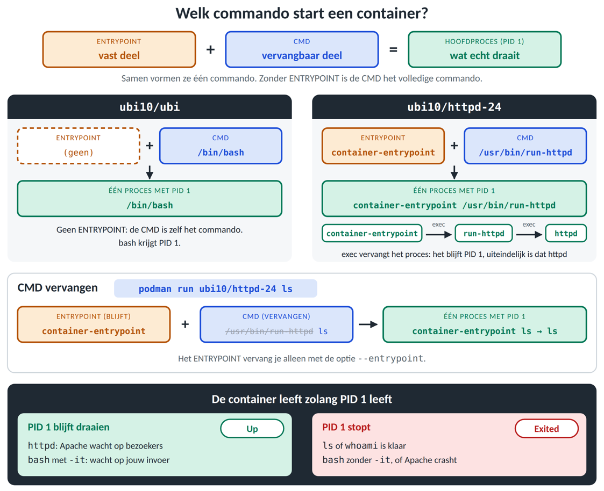
We inspecteren nu een ander bekend image “docker.io/library/nginx:latest”.
We downloaden eerst het image.
student@serverXX:~$ podman pull nginx:latest
We checken het entrypoint van docker.io/library/``nginx:latest.
student@serverXX:~$ podman image inspect nginx:latest | grep -A2 Entrypoint
"Entrypoint": [
"/docker-entrypoint.sh"
],
/docker-entrypoint.sh doet een aantal voorbereidingen voordat nginx start.
We checken nu het Cmd van nginx:latest.
student@serverXX:~$ podman image inspect nginx:latest | grep -A4 Cmd
"Cmd": [
"nginx",
"-g",
"daemon off;"
],
We checken het Entrypoint van nginx:latest.
student@serverXX:~$ podman image inspect nginx:latest | grep -A2 Entrypoint
"Entrypoint": [
"/docker-entrypoint.sh"
],
Bij Cmd staat dat Nginx op de voorgrond moet worden uitgevoerd.
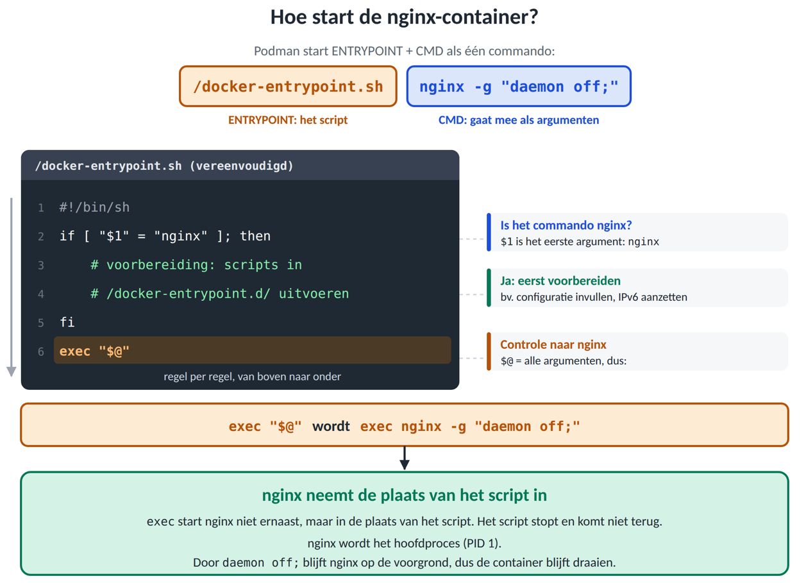
Hieronder zie je de verschillende lagen van het image.
student@serverXX:~$ podman image inspect nginx:latest | grep -A8 Layers
"Layers": [
"sha256:411a86676185cb54d695a805b238194a64e9b77e0c723f3802fbb87d333ea0b3",
"sha256:fbbaa9def3f47be5e715dfb72102569c8e777e729dd599dce42696f6dbec6749",
"sha256:07ed3a39ef493911543c05b46bf7f1096f0c13d2ac5964a668e47adc8c4944c9",
"sha256:d28562fdd7537decfb3e46cae581a318c1622348c877d7488611bd11c97a4349",
"sha256:512abb8a97debfb930c4f4ba1901214652d99af75774f80c1477c4fad7aaf0bd",
"sha256:f447a6219c8c613984ba097746da31b4422b7a5f29f23193afa250da59a7f444",
"sha256:3f8bcf23d8937ebc4db4ce2d784807818e49a608b7a6f7ad0cebb7edef9443e2"
]
4.6 Interactief een container bouwen¶
4.6.1 Webserver¶
We gaan nu zelf een Apache-webserver interactief bouwen in een container op basis van UBI10.
We starten hiervoor een interactieve container op.
student@serverXX:~$ podman run -it -p 8080:80 ubi10/ubi:latest
[root@549bead12a05 /]#
-it: deze optie hebben we al besproken.
-p <HOST_POORT>:<CONTAINER_POORT>: de webserver draait op poort 80 in de container en zal beschikbaar zijn via poort 8080 op de host.
Opmerking: als je wil dat de website op poort 80 beschikbaar is op de host (-p 80:80) moet je sudo gebruiken omdat een niet-root gebruiker geen poorten onder 1024 mag openen.
Je bent nu root in de container.
We installeren nu Apache in de container.
[root@549bead12a05 /]# dnf install -y httpd
Updating Subscription Management repositories.
…
Complete!
Maak nu een eenvoudige webpagina aan.
[root@549bead12a05 /]# echo "Hallo vanaf Apache op UBI10!" > /var/www/html/index.html
Start nu httpd op in de container.
[root@549bead12a05 /]# /usr/sbin/httpd
AH00558: httpd: Could not reliably determine the server's fully qualified domain name, using 192.168.112.100. Set the 'ServerName' directive globally to suppress this message
De melding gaat over de servernaam (ServerName), maar de webserver is wel gestart.
Vraag het IP-adres op met ip (nmcli is niet geïnstalleerd in de container).
[root@549bead12a05 /]# ip addr
1: lo: <LOOPBACK,UP,LOWER_UP> …
…
2: ens160: <BROADCAST,MULTICAST,UP,LOWER_UP> …
link/ether 6a:18:4a:39:ad:28 brd ff:ff:ff:ff:ff:ff
inet 192.168.112.100/24 brd 192.168.112.255 scope global noprefixroute ens160
…Het IP-adres vinden we terug bij ens160: 192.168.112.100. De container krijgt hetzelfde IP-adres als de containerhost (opgelet, we werken hier rootless). Dat komt omdat rootless Podman het netwerk regelt met pasta, en pasta geeft de container standaard dezelfde IP-instellingen als de host.
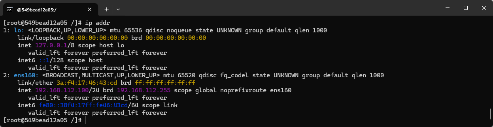
Open een tweede SSH-verbinding en controleer welke containers actief zijn.
student@serverXX:~$ podman ps
CONTAINER ID IMAGE COMMAND …
…
549bead12a05 registry.access.redhat.com/ubi10/ubi:latest /bin/bash …
Zoals je ziet is de container 549bead12a05 nog steeds actief.
Je kan ook vanaf de containerhost het IP-adres opvragen van de container.
student@serverXX:~$ podman exec -it 54 ip addr
1: lo: <LOOPBACK,UP,LOWER_UP> …
…
2: ens160: <BROADCAST,MULTICAST,UP,LOWER_UP> …
link/ether 6a:18:4a:39:ad:28 brd ff:ff:ff:ff:ff:ff
inet 192.168.112.100/24 brd 192.168.112.255 scope global noprefixroute ens160
…
We testen nu vanuit de container of de webserver draait.
[root@549bead12a05 /]# curl 192.168.112.100
Hallo vanaf Apache op UBI10!
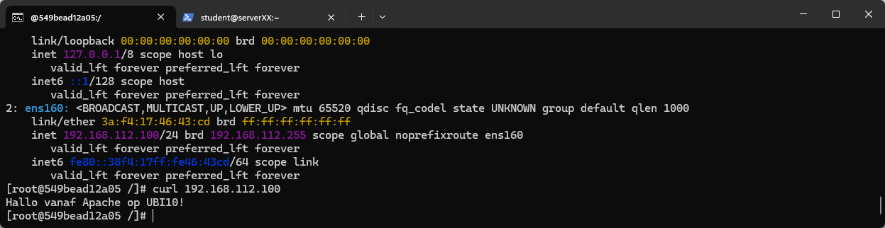
We testen nu vanuit de host of de webserver draait (let op: hier is het op poort 8080!).
student@serverXX:~$ curl 192.168.112.100:8080
Hallo vanaf Apache op UBI10!
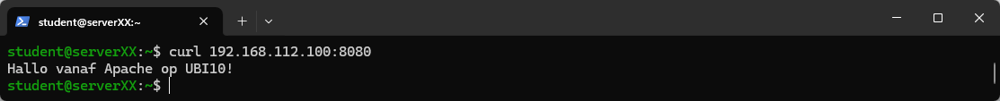
Uiteraard kan je dit ook testen vanuit de grafische omgeving.
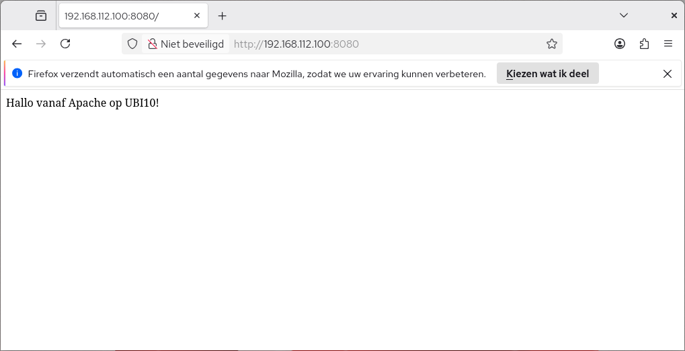
Hieronder een afbeelding van hetgeen we net hebben uitgevoerd.
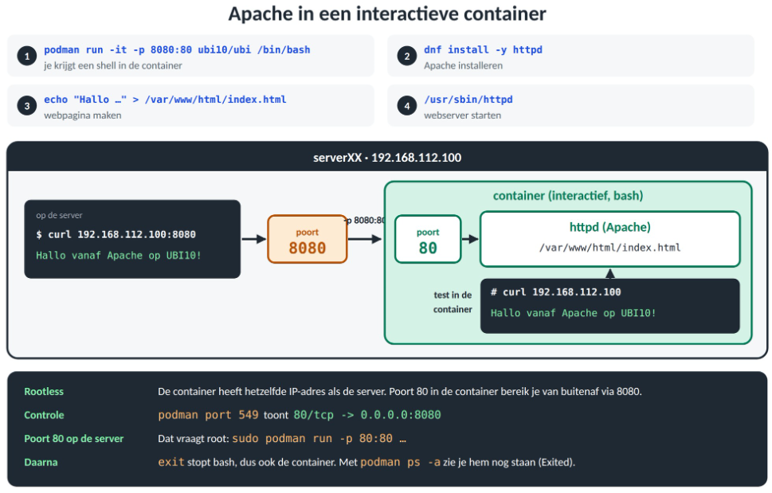
Je kan de poortdoorverwijzing ook controleren.
student@serverXX:~$ podman port 549
80/tcp -> 0.0.0.0:8080
Sluit de container met de webserver af.
[root@549bead12a05 /]# exit
exit
Zoals je hieronder ziet, draait de container met de webserver niet meer.
student@serverXX:~$ podman ps
CONTAINER ID IMAGE COMMAND …
…
Als je met podman ps -a alle containers toont (actief en gestopt), zie je de container uiteraard nog staan.
student@serverXX:~$ podman ps -a
CONTAINER ID IMAGE COMMAND …
…
549bead12a05 registry.access.redhat.com/ubi10/ubi:latest /bin/bash …
4.6.2 DNS-server¶
We gaan een DNS-server bouwen in een container.
Om te beginnen starten we een nieuwe container in de achtergrond (detached).
student@serverXX:~$ podman run -d ubi10/ubi:latest sleep infinity
b2071b2fa6506f5ea6fae5ea522c4558f9fb40b1fa7362440e72352eb2d05b94
-
-d: start de container in de achtergrond (detached).
-
sleep infinity: houdt de container in leven zodat je kunt inloggen en configureren.
Open een shell in de container.
student@serverXX:~$ podman exec -it b2 bash
- podman exec -it b2 bash: open een interactieve shell in de container.
We vragen nu de hostname op en kijken naar de IP-instellingen.
[root@b2071b2fa650 /]# cat /etc/hostname
b2071b2fa650
[root@b2071b2fa650 /]# ip addr show dev ens160
2: ens160: <BROADCAST,MULTICAST,UP,LOWER_UP> mtu 65520 qdisc fq_codel state UNKNOWN group default qlen 1000
link/ether 9a:41:78:f9:0e:74 brd ff:ff:ff:ff:ff:ff
inet 192.168.112.100/24 brd 192.168.112.255 scope global noprefixroute ens160
- De container toont, zoals verwacht, 192.168.112.100 als IP-adres.
We installeren BIND en bijhorende tools in de container.
[root@b2071b2fa650 /]# dnf -y install bind bind-utils nano
…
We maken nu een primaire DNS-zone abc.pri aan op een DNS-server. Geef /etc/named.conf onderstaande inhoud.
[root@b2071b2fa650 /]# nano /etc/named.conf
options {
directory "/var/named";
recursion yes;
allow-recursion { any; };
// kies forwarders die vanaf jouw netwerk bereikbaar zijn:
forwarders { 8.8.8.8; 8.8.4.4; };
forward only;
// in containers vaak handig, tenzij je klok/anchors perfect zijn:
dnssec-validation no;
// (of: dnssec-validation auto; als je tijd NTP-juist is en validatie wilt)
};
logging {
channel default_debug {
file "data/named.run";
severity dynamic;
};
};
zone "." IN {
type hint;
file "named.ca";
};
include "/etc/named.rfc1912.zones";
include "/etc/named.root.key";
zone "abc.pri" IN {
type master;
file "/var/named/abc.pri.dns";
allow-query { any; };
allow-transfer { none; };
};
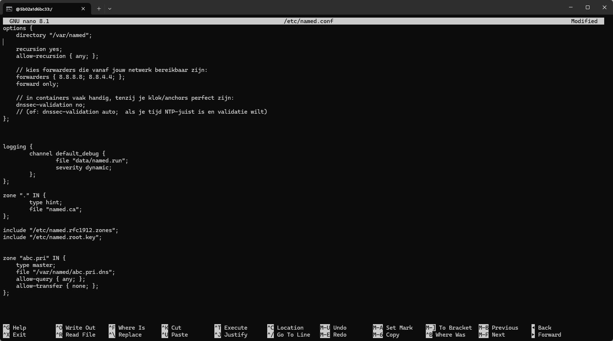
-
In dit geval wordt een DNS-zone met de naam abc.pri aangemaakt. Het gebruik van .pri (privé) is een gangbare praktijk voor interne netwerken, hoewel dit een niet-geregistreerde topleveldomeinnaam is. Dit betekent dat het domein abc.pri niet publiek toegankelijk is op internet, maar alleen binnen je interne netwerk wordt gebruikt.
-
De zonefile waarnaar verwezen wordt, specificeert de bestandsnaam waarin de DNS-zone wordt opgeslagen. In dit geval wordt het zonebestand opgeslagen als abc.pri.dns.
We zullen nu een zonebestand aanmaken.
[root@b2071b2fa650 /]# nano /var/named/abc.pri.dns
$ORIGIN abc.pri.
@ IN SOA ns1.abc.pri. hostmaster.abc.pri. (
2025031701 ; serial (YYYYMMDDnn)
1d ; vernieuwingsperiode
3h ; herhalingsperiode
3d ; vervaltijd
3h ; minimum TTL
)
IN NS ns1.abc.pri.
ns1 IN A 127.0.0.1
host IN A 192.168.1.100
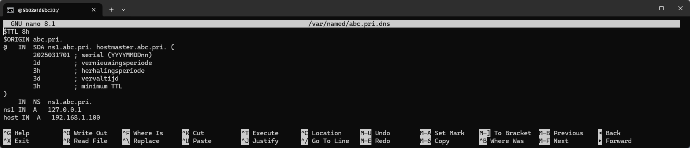
Onderstaande commando’s zorgen ervoor dat de zonefiles alleen toegankelijk zijn voor de gebruiker en groep named.
[root@b2071b2fa650 /]# chown -R named:named /var/named
[root@b2071b2fa650 /]# chmod 770 -R /var/named
We checken nu de syntax van de configuratiebestanden.
- named.conf
[root@b2071b2fa650 /]# named-checkconf -z /etc/named.conf
zone localhost.localdomain/IN: loaded serial 0
zone localhost/IN: loaded serial 0
zone 1.0.0.0.0.0.0.0.0.0.0.0.0.0.0.0.0.0.0.0.0.0.0.0.0.0.0.0.0.0.0.0.ip6.arpa/IN: loaded serial 0
zone 1.0.0.127.in-addr.arpa/IN: loaded serial 0
zone 0.in-addr.arpa/IN: loaded serial 0
zone abc.pri/IN: loaded serial 2025031701
- abc.pri.dns
[root@b2071b2fa650 /]# named-checkzone abc.pri /var/named/abc.pri.dns
zone abc.pri/IN: loaded serial 2025031701
OK
We starten nu named op in de voorgrond (-g) met de user named.
[root@b2071b2fa650 /]# named -g -u named
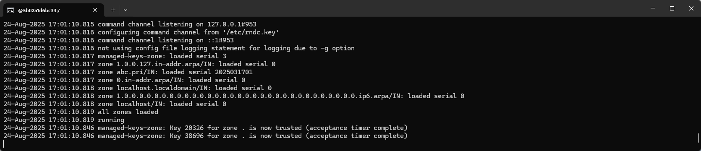
We controleren eerst of de container verbinding kan maken met het internet.
Open daarvoor in een ander venster of tabblad opnieuw een shell in dezelfde container.
student@serverXX:~$ podman exec -it b2 bash
Installeer iputils om ping te kunnen gebruiken.
[root@b2071b2fa650 /]# dnf install -y iputils
Je ziet dat je vanuit de container verbinding hebt met internet.
[root@b2071b2fa650 /]# ping -c 1 www.google.be
PING www.google.be (142.250.179.99) 56(84) bytes of data.
…
1 packets transmitted, 1 received, 0% packet loss, time 0ms
rtt min/avg/max/mdev = 25.454/25.454/25.454/0.000 ms
We gaan nu in de container een nslookup doen van een DNS-naam gebruik makend van de juist geïnstalleerde DNS-server (voer het enkele keren uit als het niet werkt – het duurt even).
[root@b2071b2fa650 /]# nslookup host.abc.pri 127.0.0.1
Server: 127.0.0.1
Address: 127.0.0.1#53
Name: host.abc.pri
Address: 192.168.1.100
Je krijgt uiteraard hetzelfde resultaat met “nslookup host.abc.pri 192.168.112.100”, want de container heeft (zoals we zagen) het IP-adres 192.168.112.100.
[root@b2071b2fa650 /]# nslookup host.abc.pri 192.168.112.100
Server: 192.168.112.100
Address: 192.168.112.100#53
Name: host.abc.pri
Address: 192.168.1.100
We verlaten de container door exit te typen.
[root@b2071b2fa650 /]# exit
exit
student@serverXX:~$
We gaan nu de actieve containers tonen.
student@serverXX:~$ podman ps
CONTAINER ID IMAGE COMMAND …
b2071b2fa650 registry.access.redhat.com/ubi10/ubi:latest sleep infinity …
Stop nu de container waarin we de DNS-server hebben geïnstalleerd.
student@serverXX:~$ podman stop b2
WARN[0010] StopSignal SIGTERM failed to stop container crazy_feistel in 10 seconds, resorting to SIGKILL
b2
Podman stuurt een SIGTERM-signaal naar het primaire proces (PID 1) dat binnen de container draait. Dit signaal vraagt het proces om netjes af te sluiten.
Podman wacht standaard 10 seconden na het SIGTERM-signaal. Als het proces binnen deze tijd beëindigt, wordt de container netjes gestopt en gaat het in de status "stopped".
Als het proces na de time-outperiode nog steeds niet is gestopt, stuurt Podman een SIGKILL-signaal naar het proces. Dit forceert een onmiddellijke beëindiging van het proces zonder de mogelijkheid om nog schoonmaakwerkzaamheden uit te voeren.
Je kan dit probleem oplossen door --init toe te voegen zoals je hieronder terugvindt. Je moet dan wel de hele paragraaf opnieuw doorlopen (maar dit is niet nodig voor het vervolg)…
podman run --init -d registry.access.redhat.com/ubi10/ubi:latest sleep infinity
--init zal ervoor zorgen dat er een klein init-systeem wordt gestart als PID 1. Dit init-proces stuurt signalen door naar het hoofdproces.
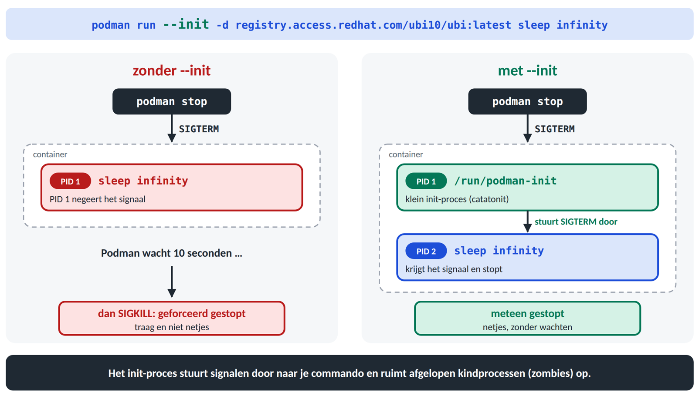
Nadat het primaire proces van de container is gestopt (of geforceerd is beëindigd), gaat de container naar de gestopte status (stopped), maar de container zelf blijft op het systeem aanwezig. Dit betekent dat je de container later opnieuw kunt starten met het commando podman start <container-id>.
We gaan nu een container image afleiden van deze container.
student@serverXX:~$ podman commit b2 contdns
Getting image source signatures
Copying blob 09bf1696a91e skipped: already exists
Copying blob cf6810d4c970 done |
Copying config 25f89a133b done |
Writing manifest to image destination
25f89a133bdd719f5b6ad1fcea4e03973adbc7895dd6a1f7d4c77d97316ae930
Het commando podman commit wordt gebruikt om een nieuwe Podman-image te maken op basis van de huidige staat van een draaiende of gestopte container. Dit betekent dat je de wijzigingen die je in een container hebt aangebracht (zoals geïnstalleerde software of aangepaste configuraties) kunt opslaan in een nieuwe image, zodat je deze later opnieuw kunt gebruiken of delen.
Bekijk nu de container images op je computer.
student@serverXX:~$ podman images
REPOSITORY TAG IMAGE ID …
localhost/contdns latest 25f89a133bdd …
…
Je ziet dat er een container image is bijgekomen met de naam contdns.
Voer nu onderstaande uit.
student@serverXX:~$ podman run --detach contdns
6eacec2c8f7fcdfd8e295d1e8c85a65583f4c1fc0bf3f95fe9ba66399ce15743
De container zal:
-
opstarten;
-
sleep infinity uitvoeren (dat commando is mee opgeslagen in het image).
We starten in de container named op.
student@serverXX:~$ podman exec -it 6e bash
[root@6eacec2c8f7f /]# named -g -u named
Maak in een ander venster of tabblad nogmaals verbinding met de container en doe een DNS-aanvraag.
student@serverXX:~$ podman exec -it 6e bash
[root@6eacec2c8f7f /]# nslookup host.abc.pri 127.0.0.1
Server: 127.0.0.1
Address: 127.0.0.1#53
Name: host.abc.pri
Address: 192.168.1.100
We verlaten nu deze container.
[root@6eacec2c8f7f /]# exit
exit
student@serverXX:~$
Omdat we geen portmapping hebben ingesteld, kunnen we vanaf de containerhost geen verbinding maken met de DNS-server.
student@serverXX:~$ nslookup host.abc.pri 192.168.112.100
;; connection timed out; no servers could be reached
…
We zullen portmapping instellen.
We sluiten hiervoor eerst de container waarin de DNS-server is geïnstalleerd af. Ik gebruik nu kill i.p.v. stop omdat podman kill onmiddellijk een SIGKILL-signaal stuurt.
student@serverXX:~$ podman kill 6e
Voor een DNS-server heb je poort 53 nodig, en wel in twee varianten:
-
UDP/53 wordt gebruikt voor bijna alle standaard DNS-queries (snelle vraag/antwoord).
-
TCP/53 wordt gebruikt voor zone-transfers en voor antwoorden die groter zijn dan één UDP-pakket.
We starten nu opnieuw een container op basis van het image contdns, maar zetten UDP- en TCP-poort 53 open.
student@serverXX:~$ podman run -p 53:53/udp -p 53:53/tcp --detach contdns
Error: pasta failed with exit code 1:
Failed to bind port 53 (Permission denied) for option '-t 53-53:53-53', exiting
Je krijgt nu uiteraard een foutmelding, want een gewone gebruiker mag geen poorten onder 1024 openen.
We proberen dit dan eens als root.
student@serverXX:~$ sudo podman run -p 53:53/udp -p 53:53/tcp --detach contdns
[sudo] wachtwoord voor student:
? Please select an image:
▸ registry.access.redhat.com/contdns:latest
registry.redhat.io/contdns:latest
docker.io/library/contdns:latest
Welke registry je ook kiest, het zal niet werken: je wilt de lokale image contdns gebruiken, en die bestaat niet voor root.
Een image die je als gewone user hebt gemaakt (localhost/contdns:latest) is niet zichtbaar voor root of eender welke andere gebruiker, en omgekeerd.
We tonen de container images van student.
student@serverXX:~$ podman images
REPOSITORY TAG IMAGE ID …
localhost/contdns latest 25f89a133bdd …
…
We tonen nu de container images van root.
student@serverXX:~$ sudo podman images
REPOSITORY TAG IMAGE ID CREATED SIZE
Om het image beschikbaar te maken voor root, exporteer je het als student en importeer je het opnieuw als root.
student@serverXX:~$ podman save -o contdns.tar localhost/contdns:latest
Copying blob 09bf1696a91e done |
Copying blob cf6810d4c970 done |
Copying config 25f89a133b done |
Writing manifest to image destination
Importeer het image nu als root (met sudo).
student@serverXX:~$ sudo podman load -i /home/student/contdns.tar
student@serverXX:~$ sudo podman images
REPOSITORY TAG IMAGE ID CREATED SIZE
localhost/contdns latest 25f89a133bdd About an hour ago 276 MB
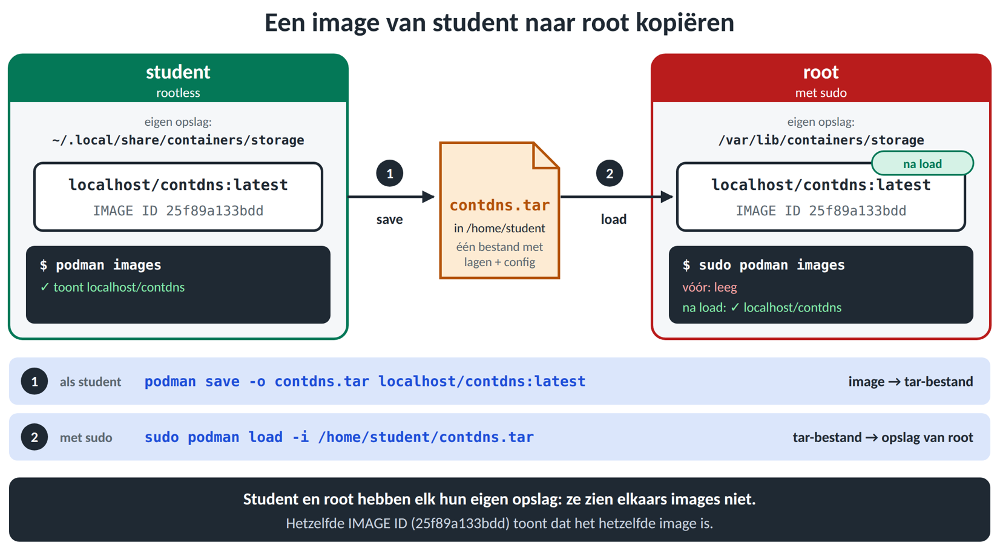
We starten nu met sudo opnieuw een container op basis van het image contdns, met UDP- en TCP-poort 53 open.
student@serverXX:~$ sudo podman run -p 53:53/udp -p 53:53/tcp --detach contdns
dc983788962c85c57846bffbd6446fa96f3f3bdcf6f78240ad2c2741a4d34da3
We starten in de container named op.
student@serverXX:~$ sudo podman exec -it dc bash
[root@dc983788962c /]# named -g -u named
Ga nu naar een ander venster of tabblad waar je aangemeld bent op serverXX.
student@serverXX:~$ sudo podman exec -it dc ip a
…
2: eth0@if11: <BROADCAST,MULTICAST,UP,LOWER_UP> mtu 1500 qdisc noqueue state UP group default qlen 1000
…
inet 10.88.0.4/16 brd 10.88.255.255 scope global eth0
…
Je ziet dat je nu niet het IP-adres krijgt van de host. Dit komt omdat je Podman als root hebt uitgevoerd!
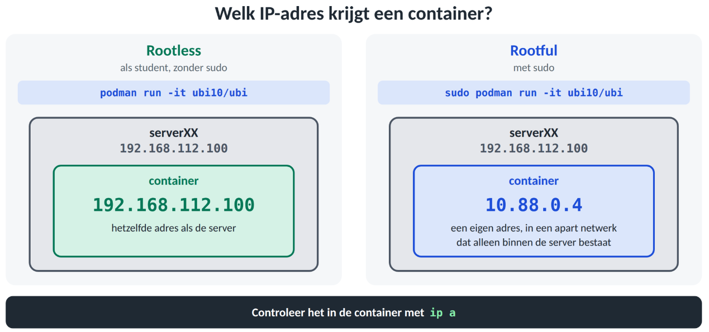
Doe een nslookup van www.google.be om te kijken of forwarden werkt.
student@serverXX:~$ nslookup www.google.be 192.168.112.100
;; communications error to 192.168.112.100#53: timed out
;; Got SERVFAIL reply from 192.168.112.100
Server: 192.168.112.100
Address: 192.168.112.100#53
** server can't find www.google.be: SERVFAIL
Zoals je ziet werkt forwarden niet.
Normaal werkt dit wel “out of the box” in Podman maar aangezien we Docker en Podman hebben geïnstalleerd is er een ingewikkeld probleem. Het doorsturen wordt tegengehouden doordat Docker Podman in de weg zit (Docker zet doorsturen op Drop en Podman op Accept). Je kan dit op verschillende manieren oplossen maar we zullen dat dit academiejaar instellen door een instelling in Docker te wijzigen (dit moet je wel wijzigen maar wat er hier exact gebeurt valt buiten de doelstellingen van de cursus).
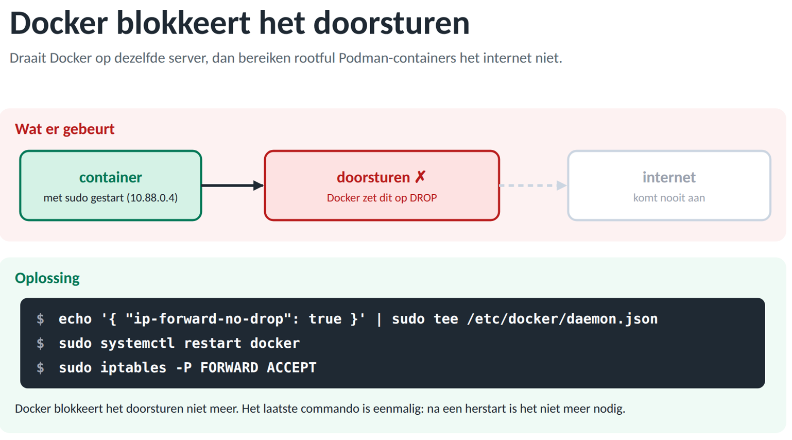
student@serverXX:~$ echo '{ "ip-forward-no-drop": true }' | sudo tee /etc/docker/daemon.json
…
student@serverXX:~$ sudo systemctl restart docker
student@serverXX:~$ sudo iptables -P FORWARD ACCEPT
Docker blokkeert nu niet langer al het doorgestuurde verkeer op de server.
Doe nu terug een nslookup van www.google.be om te kijken of forwarden werkt.
student@serverXX:~$ nslookup www.google.be 192.168.112.100
Server: 192.168.112.100
Address: 192.168.112.100#53
Non-authoritative answer:
Name: www.google.be
Address: 142.251.142.3
Name: www.google.be
Address: 2a00:1450:4007:80a::2003
Doe een lookup van host.abc.pri.
student@serverXX:~$ nslookup host.abc.pri 192.168.112.100
Server: 192.168.112.100
Address: 192.168.112.100#53
Name: host.abc.pri
Address: 192.168.1.100
Ook dit werkt!
Hieronder staat een afbeelding van hetgeen we gedaan hebben om de DNS-server aan de praat te krijgen.
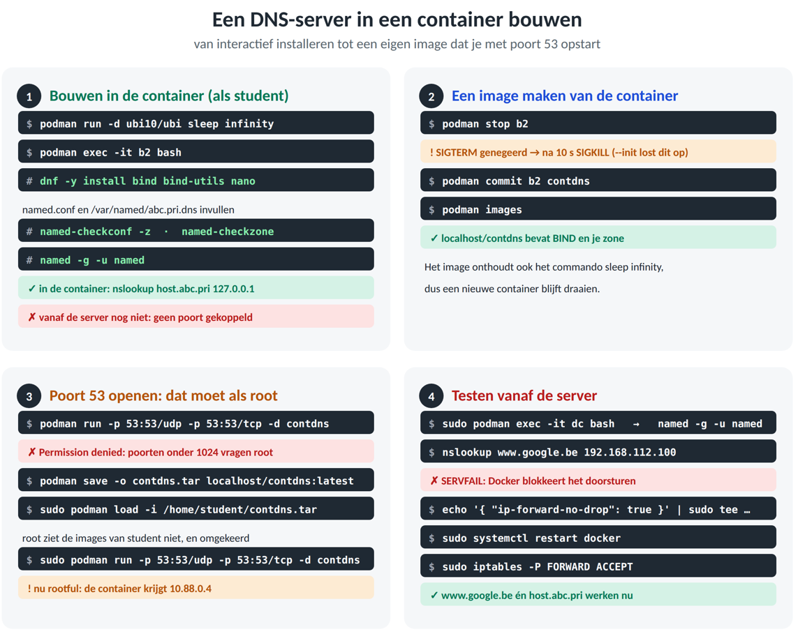
We stoppen de DNS-server.
student@serverXX:~$``sudo`` podman kill dc
4.7 Containers starten, stoppen en verwijderen¶
Voor dit onderdeel verwijderen we eerst, voor de eenvoud, alle containers van student.
student@serverXX:~$ podman rm $(podman ps -a -q) -f
Hoe dit werkt, bespreken we verderop.
Voor dit onderdeel starten we ubi10/ubi eerst 2 keer, zodat de container blijft draaien.
student@serverXX:~$ podman run -i -t -d ubi10/ubi
54f1575ffceca735d92b256cf7181ed8eef1993005d2700b89e2f027fed0a484
student@serverXX:~$ podman run -it -d ubi10/ubi
88a2cf918c2d5f4985be19efd3e00557d512fc7942cfd37bc2c32352d2a7392f
-
-i houdt de container in leven; -t zorgt ervoor dat je een gewone shell met prompt krijgt als je er later aan koppelt (zie verder). Gebruik dus altijd best zowel de optie -i als de optie -t.
-
Container draait in de achtergrond door optie -d.
-
Het bash-proces is het hoofdproces in de container. Omdat Bash actief blijft, blijft de container ook draaien. Zodra Bash stopt (bijvoorbeeld als je exit uitvoert in de container), zal de container automatisch stoppen.
-
Je mag de opties ook combineren (-i -t kan je ook schrijven als -it).
-i en -d lijken tegenstrijdig, maar als je een container detached start zonder -it, gebeurt het volgende:
-
De container start.
-
/bin/bash krijgt geen invoer en geen terminal (TTY).
-
Bash heeft dus niets te doen → het sluit meteen af.
-
Resultaat → je container stopt onmiddellijk.
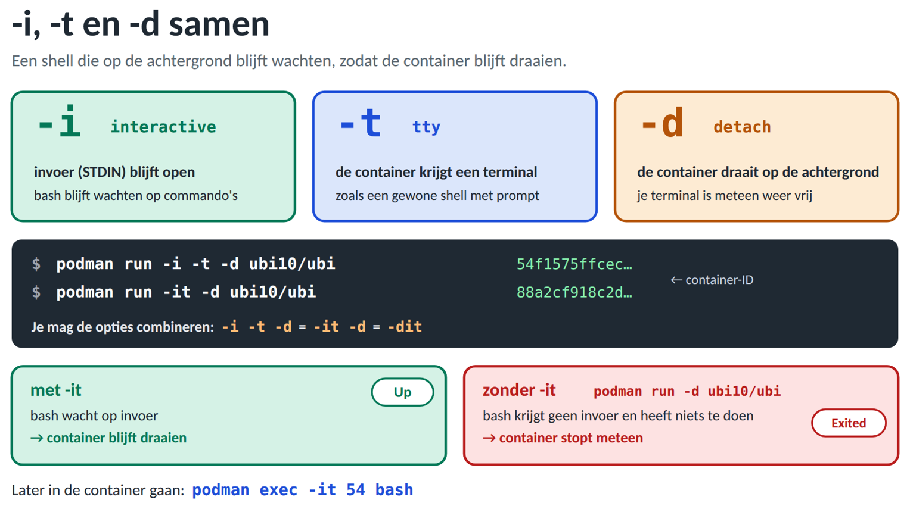
We starten ook 2 containers die zichzelf onmiddellijk afsluiten.
student@serverXX:~$ podman run -d ubi10/ubi
8c728e96ce0e939ec839fb1ff20e583924a1a1f056c33de0ecc3feb2c0edb9b6
student@serverXX:~$ podman run -d ubi10/ubi
553cb8581f98265a4358b103cf655f8a41aa5e72e892e882b2ccb6fc1d467d98
We tonen nu alle containers van de gebruiker student.
student@serverXX:~$ podman ps -a
CONTAINER ID IMAGE COMMAND …
54f1575ffcec registry.access.redhat.com/ubi10/ubi:latest /bin/bash …
88a2cf918c2d registry.access.redhat.com/ubi10/ubi:latest /bin/bash …
8c728e96ce0e registry.access.redhat.com/ubi10/ubi:latest /bin/bash …
553cb8581f98 registry.access.redhat.com/ubi10/ubi:latest /bin/bash …
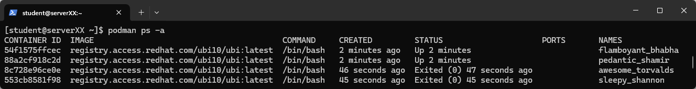
Dit geeft een lijst weer van alle containers op het systeem van de gebruiker student, zowel actieve (draaiende) als gestopte containers.
We tonen nu alle actieve containers van de gebruiker student.
student@serverXX:~$ podman ps
CONTAINER ID IMAGE COMMAND …
54f1575ffcec registry.access.redhat.com/ubi10/ubi:latest /bin/bash …
88a2cf918c2d registry.access.redhat.com/ubi10/ubi:latest /bin/bash …
We gaan nu de draaiende container met de container ID beginnend met 54 afsluiten.
student@serverXX:~$ podman stop 54
WARN[0010] StopSignal SIGTERM failed to stop container flamboyant_bhabha in 10 seconds, resorting to SIGKILL
54
Linux beschermt PID 1: signalen zoals SIGTERM worden alleen afgeleverd als het proces er zelf een handler voor heeft. Bash heeft die niet, dus podman stop doet niets. Na 10 seconden stuurt Podman daarom SIGKILL, en dat kan geen enkel programma negeren.
Het UBI10-init image is speciaal gemaakt om precies dit probleem op te lossen.
We proberen dit uit door eerst de image ubi10/ubi-init lokaal te downloaden.
student@serverXX:~$ po
Resolved "ubi10/ubi-init" as an alias (/etc/containers/registries.conf.d/001-rhel-shortnames.conf)
Trying to pull registry.access.redhat.com/ubi10/ubi-init:latest...
Getting image source signatures
Checking if image destination supports signatures
Copying blob c6edde6ffca0 skipped: already exists
Copying blob 1094cf3c2cfb done |
Copying config a561029cd0 done |
Writing manifest to image destination
Storing signatures
a561029cd0f8c767f5c3a73c1937651bb7c14bab8f366a14b766610b8c9dffe8
We starten nu terug een container die blijft draaien, maar nu van ubi-init.
student@serverXX:~$ podman run -i -t -d ubi10/ubi-init
457172280bf896feb4dfc6d4528a1653a3406dea071eed51ae6e380c76fd329f
We checken of de container draait.
student@serverXX:~$ podman ps
CONTAINER ID IMAGE COMMAND …
88a2cf918c2d registry.access.redhat.com/ubi10/ubi:latest /bin/bash …
457172280bf8 registry.access.redhat.com/ubi10/ubi-init:latest /sbin/init …
Zoals je ziet blijft de container draaien en bij het commando (COMMAND) staat /sbin/init i.p.v. /bin/bash.
Hieronder vind je het verschil tussen ubi10 en ubi10-init terug.
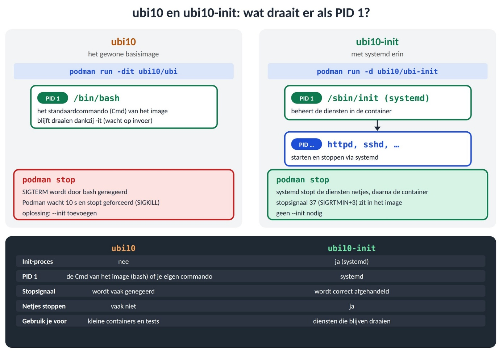
We stoppen nu de container 45 (degene die gebruik maakt van ubi-init).
student@serverXX:~$ podman stop 45
45
De container wordt nu op een mooie manier afgesloten.
De container wordt trouwens niet verwijderd!
Om de container terug te starten gebruik je onderstaande.
student@serverXX:~$ podman start 45
45
Om een container te verwijderen gebruik je “podman rm”.
student@serverXX:~$ podman rm 45
Error: cannot remove container 457172280bf896feb4dfc6d4528a1653a3406dea071eed51ae6e380c76fd329f as it is running - running or paused containers cannot be removed without force: container state improper
De container kan niet verwijderd worden, want hij draait nog. Stop hem dus eerst.
student@serverXX:~$ podman stop 45; podman rm 45
45
45
Om de ID’s van alle containers (actief en gestopt) te tonen, doe je het volgende.
student@serverXX:~$ podman ps -a -q
54f1575ffcec
88a2cf918c2d
8c728e96ce0e
553cb8581f98
Je kan, gebruik makend van command substitution (zie Linux Essentials), alle containers stoppen.
student@serverXX:~$ podman stop $(podman ps -a -q)
WARN[0010] StopSignal SIGTERM failed to stop container pedantic_shamir in 10 seconds, resorting to SIGKILL
88a2cf918c2d
8c728e96ce0e
553cb8581f98
54f1575ffcec
In plaats van “podman stop $(podman ps -a -q)” kan je ook gebruik maken van “podman stop --all”.
student@serverXX:~$ podman stop --all
…
“podman stop” toont gewoon de ID van elke container die het behandeld heeft, ook als die al gestopt was.
We vragen de containers op die draaien.
student@serverXX:~$ podman ps
CONTAINER ID IMAGE COMMAND CREATED STATUS PORTS NAMES
Er draaien nu uiteraard geen containers meer.
Je kan alle containers op een eenvoudige manier verwijderen.
student@serverXX:~$ podman rm $(podman ps -a -q) -f
8c728e96ce0e
553cb8581f98
54f1575ffcec
88a2cf918c2d
Ook zou je alle containers kunnen verwijderen met podman rm --all.
student@serverXX:~$ podman rm --all
Als je alle containers opvraagt na ze allemaal te hebben verwijderd, zie je via onderstaand commando dat er geen meer zijn.
student@serverXX:~$ podman ps -a
CONTAINER ID IMAGE COMMAND CREATED STATUS PORTS NAMES
Als je alleen gestopte containers wenst te verwijderen doe je dit als volgt.
student@serverXX:~$ podman container prune
WARNING! This will remove all non running containers.
Are you sure you want to continue? [y/N] y
Er zijn uiteraard geen (extra) containers verwijderd omdat we hiervoor al alle containers (actieve en niet-actieve) hebben verwijderd.
We gaan nu de container images tonen van de gebruiker student.
student@serverXX:~$ podman images
REPOSITORY TAG IMAGE ID …
localhost/contdns latest 25f89a133bdd …
registry.access.redhat.com/ubi10/ubi-init latest a561029cd0f8 …
registry.access.redhat.com/ubi10/ubi latest 620bc887852d …
…
Om het image localhost/contdns te verwijderen, voer je het volgende uit.
student@serverXX:~$ podman image rm localhost/contdns
Untagged: localhost/contdns:latest
Deleted: 25f89a133bdd719f5b6ad1fcea4e03973adbc7895dd6a1f7d4c77d97316ae930
In plaats van “podman image rm” kan je ook gebruik maken van “podman rmi” om een image te verwijderen.
Alleen het image localhost/contdns wordt verwijderd; andere images blijven staan.
student@serverXX:~$ podman images
REPOSITORY TAG IMAGE ID …
registry.access.redhat.com/ubi10/ubi-init latest a561029cd0f8 …
registry.access.redhat.com/ubi10/ubi latest 620bc887852d …
…
Om alle container images te verwijderen gebruik je onderstaande.
student@serverXX:~$ podman image rm --all -f
Untagged: registry.access.redhat.com/ubi10/ubi-init:latest
Untagged: registry.access.redhat.com/ubi10/ubi:latest
…
4.7.1 Samengevat¶
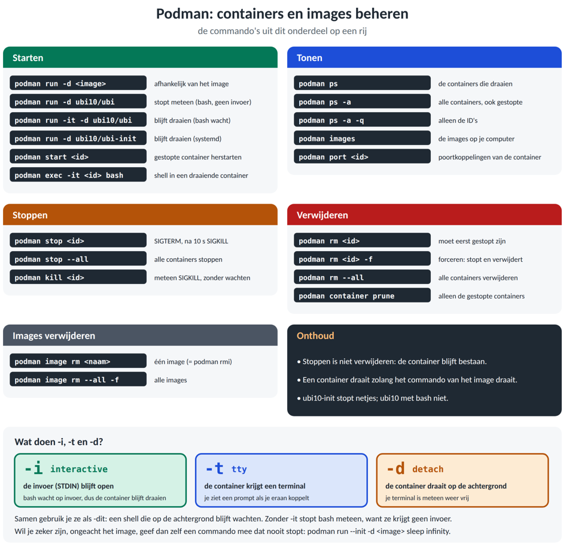
4.8 Een container image bouwen met een Containerfile¶
4.8.1 Waarom een Containerfile?¶
In het vorige onderdeel bouwde je een image interactief. Je startte een container, installeerde en configureerde alles met de hand, stopte de container en maakte er met podman commit een image van. Kort samengevat:
-
Toegang verkregen tot de container.
-
Instructies gegeven over hoe deze zichzelf moet configureren.
-
De container gestopt.
-
Een image gecreëerd op basis van wat we hadden gemaakt.
Die werkwijze heeft nadelen:
-
Je moet alle stappen opnieuw met de hand doen als er iets wijzigt.
-
Achteraf kan niemand zien hoe het image gebouwd is.
-
Elke stap is handwerk, dus foutgevoelig. Zo sloot je de container daarnet nog geforceerd af.
Met een Containerfile bouw je een image op basis van een tekstbestand met instructies. Zo staat de opbouw van je image op papier, kan je ze met één commando opnieuw bouwen en kan iedereen nalezen wat erin zit. Bij Docker heet dat bestand een Dockerfile; verderop lees je hoe compatibel beide zijn.
4.8.2 De instructies en het bouwproces¶
Een image bouwen met een Containerfile gaat in drie stappen.
-
Maak een Containerfile
Plaats een bestand met de naam Containerfile in een map en schrijf daarin de instructies die het image opbouwen. Een andere naam mag ook, maar dan geef je die op met de optie -f.-
FROM: identificeert van welke initiële image we dit proces willen starten.
-
COPY: kopieert de inhoud van een bestand op je host naar een locatie binnen het image.
-
RUN: voert een opdracht uit tijdens het bouwen van het image (bv. software installeren).
-
ENTRYPOINT: het vaste deel van het commando waarmee de container start. Dat deel blijft staan, ook als je zelf een commando meegeeft.
-
CMD: het vervangbare deel. Geef je bij podman run een commando mee, dan komt dat in de plaats van CMD. We bespreken beide verderop.
-
-
Bouw het image
Navigeer naar de directory met de Containerfile en voer het commando uit.
podman build --format=Docker -t <image-naam> .
-
De optie -t geeft de naam en optioneel een tag aan het image, en de . verwijst naar de huidige directory met de Containerfile.
-
--format=docker
Hierdoor gebruik je hetzelfde formaat als Docker. Dat is nodig voor instructies zoals HEALTHCHECK, die je verderop gebruikt.
- Run de container
Nadat het image is aangemaakt, kan je een container draaien gebaseerd op de zelfgemaakte image.
Elke instructie maakt een nieuwe laag in het image. Verandert er niets aan een instructie, dan hergebruikt Podman de bestaande laag. Je ziet dan "Using cache" in de uitvoer. Zet instructies die zelden wijzigen daarom bovenaan, zoals het installeren van software.
4.8.3 Een DNS-image bouwen¶
We maken eerst een mappenstructuur aan in de homedirectory van student.
student@serverXX:~$ mkdir -p ~/oefening/scripts
Maak de Containerfile aan met nano.
student@serverXX:~$ nano oefening/Containerfile
We gaan nu onderstaande inhoud (zoals reeds uitgelegd) toevoegen aan de Containerfile.
# Basisimage ubi10/ubi-init
FROM registry.access.redhat.com/ubi10/ubi-init
# Bind + tools installeren
RUN dnf -y install bind bind-utils && dnf clean all
# Config & zone
COPY scripts/named.conf /etc/named.conf
COPY scripts/abc.pri /var/named/abc.pri
# Vereiste directories + juiste rechten
RUN chown named:named /var/named \
&& chmod 0750 /var/named \
&& chown named:named /var/named/abc.pri /etc/named.conf \
&& chmod 0640 /var/named/abc.pri /etc/named.conf
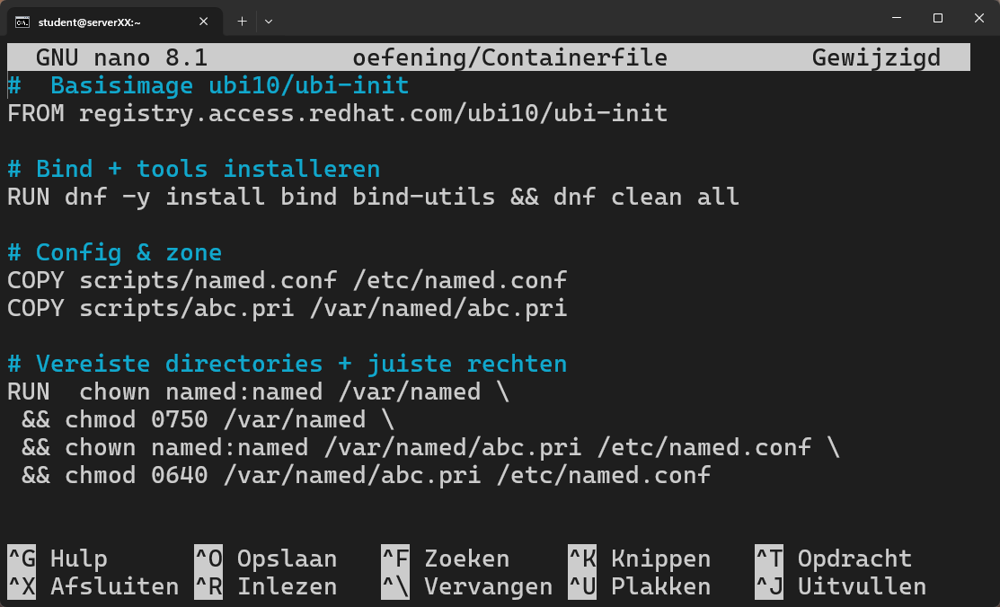
Sla op en sluit af met <CTRL> + X en J (Gewijzigde buffer opslaan).
We maken nu de bestanden aan die van serverXX naar het image gekopieerd worden.
student@serverXX:~$ nano oefening/scripts/named.conf
options {
directory "/var/named";
listen-on port 53 { any; };
allow-query { any; };
recursion yes;
allow-recursion { any; };
forwarders { 8.8.8.8; 8.8.4.4; };
forward only;
dnssec-validation no;
};
zone "abc.pri" {
type master;
file "abc.pri";
};
Sla op en sluit af met <CTRL> + X en J (Gewijzigde buffer opslaan).
student@serverXX:~$ nano oefening/scripts/abc.pri
$TTL 8h
$ORIGIN abc.pri.
@ IN SOA ns1.abc.pri. hostmaster.abc.pri. (
2025031701 ; serial (YYYYMMDDnn)
1d ; vernieuwingsperiode
3h ; herhalingsperiode
3d ; vervaltijd
3h ; minimum TTL
)
IN NS ns1.abc.pri.
ns1 IN A 127.0.0.1
host IN A 192.168.1.100
Sla op en sluit af met <CTRL> + X en J (Gewijzigde buffer opslaan).
Ga nu naar de map met de Containerfile en bouw er een image mee.
student@serverXX:~$ cd oefening
student@serverXX:~/oefening$ podman build --format=docker -t contdns .
STEP 1/5: FROM registry.access.redhat.com/ubi10/ubi-init
STEP 2/5: RUN dnf -y install bind bind-utils && dnf clean all
…
STEP 3/5: COPY scripts/named.conf /etc/named.conf
--> c0547c29517c
STEP 4/5: COPY scripts/abc.pri /var/named/abc.pri
--> bf6f089e3b79
STEP 5/5: RUN chown named:named /var/named && chmod 0750 /var/named && chown named:named /var/named/abc.pri /etc/named.conf && chmod 0640 /var/named/abc.pri /etc/named.conf
COMMIT contdns
--> a0690336fccc
Successfully tagged localhost/contdns:latest
dde70813780a32d9acace35b7ce8de22421ffa8fd643e9d9362646acad1f31ee
In de uitvoer zie je elke instructie terug als een STEP. Elke stap levert een laag op; de laatste regel is de ID van het nieuwe image.
We checken nu dat het image contdns bestaat.
student@serverXX:~/oefening$ podman images
REPOSITORY TAG IMAGE ID …
localhost/contdns latest dde70813780a …
…
We starten nu een container aan de hand van de contdns image.
student@serverXX:~/oefening$ podman run -d -p 1053:53/udp -p 1053:53/tcp contdns /usr/sbin/named -g -u named -c /etc/named.conf
Je koppelt poort 1053 van de server aan poort 53 in de container, want als gewone gebruiker mag je geen poorten onder 1024 openen. Zo hoef je het image niet naar root te kopiëren. De optie -d start de container op de achtergrond. Met -c /etc/named.conf geef je named het configuratiebestand mee dat hij moet inlezen. Dit is optioneel aangezien dit de standaardlocatie is. Het staat er voor de duidelijkheid. Hetzelfde resultaat bekom je met (moet je niet uitvoeren):
student@serverXX:~/oefening$ podman run -d -p 1053:53/udp -p 1053:53/tcp contdns /usr/sbin/named -g -u named
We kijken nu of de container draait.
student@serverXX:~/oefening$ podman ps
CONTAINER ID IMAGE COMMAND …
6e7cd2aab566 localhost/contdns:latest /usr/sbin/named -...
Met dig controleren we of de DNS-server namen kan vertalen.
student@serverXX:~/oefening$ dig @127.0.0.1 -p 1053 host.abc.pri
…
;; ANSWER SECTION:
host.abc.pri. 28800 IN A 192.168.1.100
…
4.8.4 De container een naam geven¶
Bij het aanmaken van de container heeft Podman een willekeurige container-ID gekozen.
Als je “podman ps” uitvoert zie je altijd het eerste stukje van deze container ID bij een container staan.
student@serverXX:~/oefening$ podman ps
CONTAINER ID IMAGE … NAMES
6e7cd2aab566 localhost/contdns:latest… busy_wozniak
Als je een container aanmaakt in Podman zonder expliciet een naam op te geven, genereert Podman automatisch een unieke naam voor de container. Deze naam wordt gegenereerd op basis van een combinatie van een willekeurig gekozen bijvoeglijk naamwoord (busy) en de achternaam van een bekende wetenschapper, uitvinder of hacker (wozniak in dit geval), gescheiden door een underscore (_).
We gaan nu de juist aangemaakte container verwijderen aan de hand van die naam.
student@serverXX:~/oefening$ podman rm busy_wozniak -f
-f zorgt ervoor dat je de container kan verwijderen, ook al draait hij nog.
We gaan nu een nieuwe container starten met de naam contdns en de hostname contdns en gebaseerd op het image contdns.
student@serverXX:~/oefening$ podman run -d --name contdns --hostname contdns -p 1053:53/udp -p 1053:53/tcp contdns /usr/sbin/named -g -u named -c /etc/named.conf
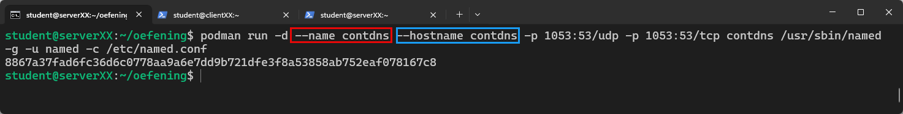
Je kan nu de zelfgekozen naam gebruiken om in de container te gaan.
[student@serverXX oefening]$ podman exec -it contdns bash
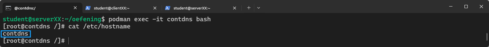
Je kan de container ook met de gekozen naam verwijderen (nadat je uit de container bent gegaan uiteraard met exit).
[root@contdns /]# exit
exit
[student@serverXX oefening]$ podman rm contdns -f
WARN[0010] StopSignal (37) failed to stop container contdns in 10 seconds, resorting to SIGKILL
contdns
Voor alle duidelijkheid: je hebt nu de container en niet het image verwijderd.
4.8.5 Het startcommando in de Containerfile: CMD en ENTRYPOINT¶
Om een container te starten moet je tot nu toe veel intypen:
podman run -d --name contdns --hostname contdns -p 1053:53/udp -p 1053:53/tcp contdns /usr/sbin/named -g -u named -c /etc/named.conf
Dat laatste stuk hoort eigenlijk bij het image zelf: elke container die je uit dit image maakt, moet nu eenmaal named starten. Daarna volstaat het korte commando, zonder dat je het startcommando nog moet meegeven.
-
Voeg een CMD-instructie toe: die wordt uitgevoerd wanneer de container start.
-
CMD kan je overschrijven door zelf een commando mee te geven bij podman run.
Meteen zetten we ook het stopsignaal juist (uitleg staat verder in cursustekst).
We voegen daarom onderstaande toe aan de Containerfile.
# Zorgt dat netjes gestopt wordt
STOPSIGNAL SIGTERM
# Uitvoeren bij initialiseren container
CMD ["/usr/sbin/named", "-g", "-u", "named", "-c", "/etc/named.conf"]
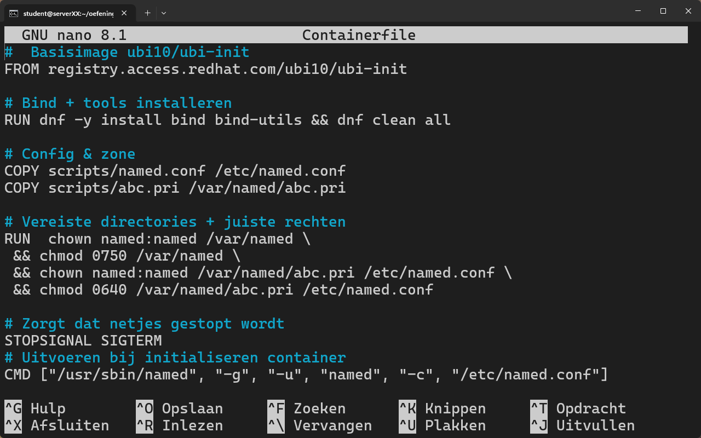
STOPSIGNAL in een container bepaalt welk signaal podman stop naar PID 1 van de container stuurt.
Waarom jij die regel nodig hebt:
- Je bouwt verder op ubi10/ubi-init. Dat image heeft STOPSIGNAL SIGRTMIN+3 (signaal 37), het signaal waarmee je systemd vraagt af te sluiten (podman kijkt welk stopsignaal bij de container hoort).
student@serverXX:~/oefening$ podman image inspect ubi10/ubi-init | grep STOP
"created_by": "/bin/sh -c #(nop) STOPSIGNAL SIGRTMIN+3",
-
In jouw container draait systemd niet, maar named. Named kent signaal 37 niet en doet er niets mee.
-
Gevolg: podman stop wachtte 10 seconden en stopte de container daarna geforceerd.
-
Met STOPSIGNAL SIGTERM overschrijf je dat: Podman stuurt nu SIGTERM, het standaardsignaal om een programma te vragen af te sluiten. Named begrijpt dat wel en stopt meteen.
De syntax bij CMD lijkt vrij ingewikkeld maar als je goed kijkt zie je dat in feite “/usr/sbin/named -g -u named -c /etc/named.conf” wordt uitgevoerd. Je kan dit ook vereenvoudigen tot:
# Uitvoeren bij initialiseren container
CMD /usr/sbin/named -g -u named -c /etc/named.conf
maar dan start named via /bin/sh -c … en niet rechtstreeks. Met de schrijfwijze tussen haken (exec-vorm) is named zelf PID 1 en komen signalen zeker goed aan.
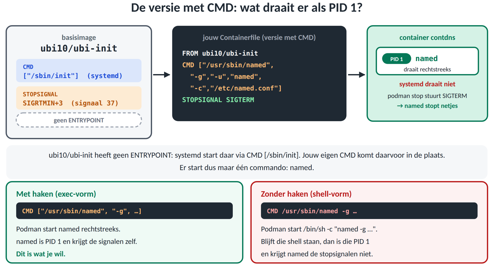
De CMD-instructie geeft het standaardcommando op dat wordt uitgevoerd wanneer de container start. Geef je bij podman run zelf een commando mee, dan komt dat in de plaats van CMD.
ENTRYPOINT stelt het vaste deel van het startcommando in. Dat wordt altijd uitgevoerd. Geef je bij podman run zelf iets mee, dan wordt dat als argument achter het ENTRYPOINT geplakt, in plaats van het te vervangen. Alleen met de optie --entrypoint kan je het vervangen.
We passen de Containerfile aan zodat ENTRYPOINT i.p.v. CMD gebruikt wordt.
# Uitvoeren bij initialiseren container
ENTRYPOINT ["/usr/sbin/named", "-g", "-u", "named", "-c", "/etc/named.conf"]
Hieronder zie je de veranderingen samengevat in afbeelding.
Bouw nu het gewijzigde image.
student@serverXX:~/oefening$ podman build --format=docker -t contdns .
STEP 1/7: FROM registry.access.redhat.com/ubi10/ubi-init
STEP 2/7: RUN dnf -y install bind bind-utils && dnf clean all
--> Using cache 17ba2f59f7459e88b844ec2797fdf39e15c5ea2a35df2fc5e9e46ea37373b535
--> 17ba2f59f745
STEP 3/7: COPY scripts/named.conf /etc/named.conf
--> 3badead4e3bf
STEP 4/7: COPY scripts/abc.pri /var/named/abc.pri
--> d0d0cf430cf2
STEP 5/7: RUN chown named:named /var/named && chmod 0750 /var/named && chown named:named /var/named/abc.pri /etc/named.conf && chmod 0640 /var/named/abc.pri /etc/named.conf
--> 54af3d1b3da7
STEP 6/7: STOPSIGNAL SIGTERM
STEP 7/7: ENTRYPOINT ["/usr/sbin/named", "-g", "-u", "named", "-c", "/etc/named.conf"]
COMMIT contdns
--> 0ee7fc766ef8
Successfully tagged localhost/contdns:latest
0ee7fc766ef800830d765daf17ede3ea8e67c80d0af0b453f23f60f1a826fbdc
We inspecteren nu het aangemaakte image.
student@serverXX:~/oefening$ podman image inspect contdns
Je ziet de verschillende lagen die gebruikt zijn.
We starten een nieuwe container op basis van dit image. Je moet nu minder argumenten meegeven (/usr/sbin/named -g -u named -c /etc/named.conf is niet meer nodig).
student@serverXX:~/oefening$ podman rm contdns -f
contdns
student@serverXX:~/oefening$ podman run -d --name contdns --hostname contdns -p 1053:53/udp -p 1053:53/tcp contdns
bc1e8bc8e440012af0b372260f375b10032fbdb2f4f59beb94dac8e3c5369da7
Kijk nu eens naar de containers die actief zijn.
student@serverXX:~/oefening$ podman ps
CONTAINER ID IMAGE COMMAND
bc1e8bc8e440 localhost/contdns:latest
Merk op dat er bij COMMAND niets staat. Je hebt immers enkel een ENTRYPOINT.
Je kan de container nu netjes stoppen en opnieuw starten.
student@serverXX:~/oefening$ podman stop contdns
contdns
student@serverXX:~/oefening$ podman start contdns
contdns
4.8.6 Is de container gezond? HEALTHCHECK¶
Met de instructie HEALTHCHECK geef je in de Containerfile een commando op dat Podman of Docker geregeld in de container uitvoert. Zo controleren ze of de toepassing in de container nog goed werkt (healthy of unhealthy).
HEALTHCHECK werkt alleen in een image in Docker-formaat. Daarom bouw je met --format=docker.
De exitcode van dat commando bepaalt de status. Is die 0, dan is de container gezond (healthy). Bij elke andere waarde is hij ongezond (unhealthy). Met deze instructies kan bijvoorbeeld een test op de DNS-server worden uitgevoerd om te controleren of de services en applicaties in de container correct functioneren en gezond zijn.
Om dit uit te leggen, openen we eerst een shell in de DNS-container.
student@serverXX:~/oefening$ podman exec -it contdns /bin/bash
We gaan gebruik maken van pgrep en installeren dat programma in de container.
[root@contdns /]# dnf install -y procps-ng
Het commando pgrep is nu beschikbaar. We checken in de contdns container of de DNS-server draait.
[root@contdns /]# pgrep named
1
-
pgrep named zoekt in de proceslijst naar een proces met de naam named (de BIND DNS-daemon).
-
Als het proces gevonden wordt → pgrep print het PID.
- 1 in dit geval (dat klopt!)
Elk commando geeft bij het afsluiten een exit-code terug: 0 als het gelukt is, een andere waarde als er iets misging. Je ziet die code niet op het scherm — ze wordt bewaard in de speciale shellvariabele $?, die je opvraagt met echo $?.
[root@contdns /]# echo $?
0
Je ziet hier exit-code 0: dat wil zeggen dat named is gevonden. Anders kreeg je exit-code 1.
We hebben de PID niet nodig om te bepalen of named draait. We kunnen dus “> /dev/null” toevoegen aan “pgrep named” om de output te verbergen.
[root@contdns /]# pgrep named > /dev/null
[root@contdns /]# echo $?
0
Met deze kennis passen we de Containerfile aan.
[root@contdns /]# exit
exit
student@serverXX:~/oefening$ nano Containerfile
# Basisimage ubi10/ubi-init
FROM registry.access.redhat.com/ubi10/ubi-init
# Bind + tools installeren
RUN dnf -y install bind bind-utils procps-ng && dnf clean all
# Config & zone
COPY scripts/named.conf /etc/named.conf
COPY scripts/abc.pri /var/named/abc.pri
# Vereiste directories + juiste rechten
RUN chown named:named /var/named \
&& chmod 0750 /var/named \
&& chown named:named /var/named/abc.pri /etc/named.conf \
&& chmod 0640 /var/named/abc.pri /etc/named.conf
# Zorgt dat netjes gestopt wordt
STOPSIGNAL SIGTERM
# Uitvoeren bij initialiseren container
ENTRYPOINT ["/usr/sbin/named", "-g", "-u", "named", "-c", "/etc/named.conf"]
#Healthcheck (wordt named uitgevoerd)
HEALTHCHECK --interval=30s --timeout=5s --retries=3 CMD \
pgrep named >/dev/null || exit 1
We bekijken alleen wat er in de Containerfile bijgekomen is.
-
Bij de installatie is er procps-ng bijgekomen zodat pgrep uitgevoerd kan worden.
-
Uitleg bij:
pgrep named >/dev/null || exit 1
De || leest die exit-code rechtstreeks — daar heb je echo $? niet meer voor nodig. Is de code van pgrep niet 0, dan wordt exit 1 uitgevoerd, en die 1 is precies wat HEALTHCHECK als "ongezond" interpreteert.
- Uitleg bij:
HEALTHCHECK --interval=30s --timeout=5s --retries=3
--interval=30s → hoe vaak de check wordt uitgevoerd (default 30s)
--timeout=5s → maximale tijd dat de check mag duren
--retries=3 → aantal mislukte checks vóórdat container unhealthy wordt
Bouw het image nu opnieuw.
student@serverXX:~/oefening$ podman build --format=docker --no-cache -t contdns .
Verwijder nu de huidige container met DNS-server.
student@serverXX:~/oefening$ podman rm contdns -f
We gaan nu een nieuwe container starten met de aangepaste versie van de DNS-server.
student@serverXX:~/oefening$ podman run -d --name contdns --hostname contdns -p 1053:53/udp -p 1053:53/tcp contdns
We gaan kijken of de container actief en healthy is.
student@serverXX:~/oefening$ podman ps
Een healthcheck rapporteert alleen: hij zet de status van de container op healthy of unhealthy. Podman en Docker ondernemen daar uit zichzelf niets mee — een container die unhealthy is, blijft gewoon draaien. Het is aan jou (of aan een beheertool zoals Cockpit of Kubernetes) om erop te reageren.
Podman kan die reactie wel automatiseren. Met de optie --health-on-failure bij podman run geef je aan wat er moet gebeuren zodra de container unhealthy wordt:
-
none: niets doen. Dit is de standaardinstelling.
-
kill: de container onmiddellijk afbreken.
-
stop: de container netjes stoppen.
-
restart: de container stoppen en meteen opnieuw starten.
4.8.7 Bouwen met Buildah¶
Podman bouwt images niet zelf: het gebruikt daarvoor Buildah. Het commando podman build roept met andere woorden Buildah op. Je kan Buildah ook rechtstreeks gebruiken.
Installeer Buildah:
student@serverXX:~/oefening$ sudo dnf install -y buildah
…
Klaar!
Je zal merken dat buildah uiteraard reeds geïnstalleerd is.
Bouw hetzelfde image, nu met Buildah:
student@serverXX:~/oefening$ buildah build --format=docker -t contdns .
Het resultaat is identiek: Buildah en Podman gebruiken dezelfde opslag, dus je ziet het image gewoon staan met podman images.
student@serverXX:~/oefening$ podman images
REPOSITORY TAG IMAGE ID CREATED SIZE
localhost/contdns latest c2293fd8bb89 11 seconds ago 270 MB
4.8.8 Samengevat¶
4.9 Hoe een container start en stopt¶
Onderstaande tabel vat samen wat er in elk van de images start, welk proces PID 1 wordt en of de container netjes stopt.
| image | wat er start | PID 1 | stopsignaal | stopt netjes? |
|---|---|---|---|---|
| ubi10 en ubi10/ubi | /bin/bash | bash | – (SIGTERM) | nee, na 10 s SIGKILL |
| ubi10/ubi met --init * | catatonit → /bin/bash | catatonit | – (SIGTERM) | ja |
| ubi10/ubi-init | /sbin/init | systemd | SIGRTMIN+3 | ja |
| ubi10/httpd-24 | container-entrypoint → run-httpd ** | httpd | – (SIGTERM) | ja |
| nginx | docker-entrypoint.sh → nginx ** | nginx | SIGQUIT | ja |
| alpine | /bin/sh | sh | – (SIGTERM) | nee, na 10 s SIGKILL |
| localhost/contdns | named -g -u named -c /etc/named.conf | named | SIGTERM | ja |
* Geen apart image: hetzelfde ubi10/ubi, gestart met podman run --init. Podman schuift dan een klein initprogramma vóór de CMD.
** Een entrypointscript dat zichzelf met exec laat vervangen, waardoor de server zelf PID 1 wordt.
Een streepje bij het stopsignaal betekent niet dat er geen signaal gestuurd wordt, wel dat het image niets heeft ingevuld en Podman zijn standaard gebruikt: SIGTERM.
In de kolom “wat er start” zijn ENTRYPOINT en CMD samengenomen. Het verschil tussen beide instructies vind je hieronder.
| ENTRYPOINT | CMD | |
|---|---|---|
| wat het is | het vaste hoofdcommando van het image | het standaardcommando of de standaardargumenten |
| overschrijven bij podman run | alleen met de optie --entrypoint | gewoon een commando achteraan typen |
| samen gebruikt | blijft staan | wordt erachter geplakt als argumenten |
| in een afgeleid image | een eigen ENTRYPOINT wist de geërfde CMD | blijft behouden tot je zelf een CMD zet |
| wanneer kies je dit | het image doet altijd hetzelfde, zoals contdns of nginx | het image is veelzijdig, zoals ubi10/ubi |
Zo vullen de images die we gebruikt hebben dat in.
| image | ENTRYPOINT | CMD |
|---|---|---|
| ubi10 en ubi10/ubi | — | /bin/bash |
| ubi10/ubi-init | — | /sbin/init |
| ubi10/httpd-24 | /usr/bin/container-entrypoint | /usr/bin/run-httpd |
| nginx | /docker-entrypoint.sh | nginx -g "daemon off;" |
| alpine | — | /bin/sh |
| localhost/contdns | /usr/sbin/named -g -u named -c /etc/named.conf | (leeg) |
Of een container netjes stopt, hangt niet alleen van het stopsignaal af, maar ook van het programma dat op PID 1 draait: dat moet het signaal herkennen. Onderstaande tabel toont op welk signaal elk programma reageert.
| programma | afsluiten |
|---|---|
| bash / sh | — (reageert niet) |
| systemd | SIGRTMIN+3 |
| httpd (Apache) | SIGTERM (meteen), SIGWINCH (netjes) |
| nginx | SIGQUIT (netjes), SIGTERM (meteen) |
| named (BIND) | SIGTERM, SIGINT |
| catatonit (--init) | geeft het signaal door aan het programma eronder |
Bij systemd doet SIGTERM niet wat je zou verwachten: dat vraagt hem om zichzelf opnieuw in te lezen, niet om af te sluiten. Vandaar SIGRTMIN+3 als stopsignaal in ubi10/ubi-init.
Je hebt dus drie manieren om een container netjes te laten stoppen:
-
gebruik een image waarvan het hoofdproces de signalen zelf correct afhandelt, zoals nginx of httpd;
-
bouw je het image zelf, zet dan STOPSIGNAL op het signaal dat jouw programma kent;
-
kan je geen van beide, start de container dan met --init.
4.10 Images uploaden naar Docker Hub¶
4.10.1 Inloggen op Docker Hub¶
Ga naar https://hub.docker.com en log in met je Docker-account.
Klik links op Repositories als je daar nog niet bent. Je komt nu op deze locatie terecht: https://hub.docker.com/repositories/<jouwusername>.
4.10.2 Private Repository¶
Een private repository in Docker Hub is een opslagplaats waar je container images kunt bewaren, maar die alleen toegankelijk is voor jou en de personen of teams aan wie je expliciet toegang verleent. Met een private repository kun je je container images beveiligen en ervoor zorgen dat alleen geautoriseerde gebruikers toegang hebben om ze te bekijken, te downloaden, of aan te passen. Dit is handig voor gevoelige projecten of bedrijfsomgevingen waar je je software niet publiekelijk wilt delen.
We gaan nu een private repository aanmaken.
Klik hiervoor op Create repository.
Vul de gegevens voor je namespace in zoals hieronder staat aangegeven. Klik erna op Create.
4.10.3 Public Repository¶
De tegenhanger van een private repository is een public repository. Dit is een opslagplaats die toegankelijk is voor iedereen. Iedereen kan de inhoud van een public repository bekijken en downloaden, zonder authenticatie.
We gaan nu een public repository aanmaken.
Klik hiervoor eerst op Repositories aan de linkerkant.
Klik dan rechtsboven op Create repository.
Vul de gegevens in zoals hieronder staat aangegeven. Je ziet ook dat staat aangegeven hoe je een image kan pushen. Klik erna op Create.
Met een gratis account (Docker Personal) mag je maar één private repository hebben in Docker Hub.
Publieke repositories zijn er onbeperkt, zolang je het redelijk houdt.
Dat ene private repository is dus een schaars goed. Wil je er een tweede, dan heb je drie
mogelijkheden:
-
zet een bestaande private repository op publiek;
-
verwijder een private repository die je niet meer nodig hebt;
-
neem een betalend abonnement (Docker Pro of hoger).
Meer informatie op https://www.docker.com/pricing/.
4.10.4 Image pushen¶
Pushen is het uploaden van een image naar een registry.
Voor dit onderdeel moet je uiteraard een image hebben dat je wil uploaden.
student@serverXX:~$ podman images
REPOSITORY TAG IMAGE ID CREATED SIZE
localhost/contdns latest bc3854be343f 2 hours ago 263 MB
…
Log nu via de CLI in op Docker Hub.
student@serverXX:~$ podman login docker.io
Username: stijn.jacobs@pxl.be
Password:
Login Succeeded!
PS Bij Docker log je als volgt in (dit doen we nu niet). Daarna geef je uiteraard je wachtwoord in.
student@serverXX:~$ docker login -u <dockergebruikersnaam>
Je moet nu je lokale image taggen met de naam van de repository op Docker Hub.
student@serverXX:~$podman tag mijnimage:latest docker.io/<jouw-gebruikersnaam>/<repo-naam>:latest
In dit geval:
student@serverXX:~$ podman tag contdns:latest docker.io/stijnjacobspxl/contdns:latest
We bekijken nu opnieuw de images op ons systeem.
student@serverXX:~$ podman images
REPOSITORY TAG IMAGE ID CREATED SIZE
docker.io/stijnjacobspxl/contdns latest bc3854be343f 2 hours ago 263 MB
localhost/contdns latest bc3854be343f 2 hours ago 263 MB
…
We pushen het image nu naar de Docker Hub.
student@serverXX:~$ podman push docker.io/stijnjacobspxl/contdns:latest
Bij een push worden ook de lagen van het basisimage (ubi10/ubi-init) mee geüpload. Dat komt omdat:
-
elke registry zijn eigen lagen bewaart: de lagen van registry.access.redhat.com staan nog niet op Docker Hub;
-
een image op Docker Hub volledig moet zijn: wie het image later pullt, moet alle lagen daar kunnen downloaden.
Lagen die er al staan, worden bij een volgende push wel overgeslagen. Je eerste push duurt daardoor het langst; wijzig je nadien enkel je eigen configuratiebestand, dan gaat het snel, want alleen die ene laag moet nog over de lijn.
Surf nu naar https://hub.docker.com/repositories/<jouwloginnaam>
Je ziet dat de repository stijnjacobs/contdns nu een image bevat.
4.10.5 Image pullen¶
Pullen betekent dat je een image van een registry, hier Docker Hub, naar de lokale opslag van je server downloadt. Daarna kan je er containers mee starten zonder opnieuw te downloaden.
Voor de eenvoud verwijderen we eerst alle images van ons systeem en pullen we daarna het image contdns.
student@serverXX:~$ podman image rm docker.io/stijnjacobspxl/contdns
Untagged: docker.io/stijnjacobspxl/contdns:latest
student@serverXX:~$ podman image rm localhost/contdns
Untagged: localhost/contdns:latest
Deleted: 84b439ad1126b631f4fb6d55bb487b7cc4d59199897bb648d2c1404776342978
We pullen nu het image van contdns.
student@serverXX:~$ podman pull docker.io/stijnjacobspxl/contdns:latest
Trying to pull docker.io/stijnjacobspxl/contdns:latest...
Getting image source signatures
Copying blob d1aa9dd3b9c4 skipped: already exists
Copying blob b0488d72fa98 skipped: already exists
Copying blob 0a47a0d98013 done |
Copying config 84b439ad11 done |
Writing manifest to image destination
84b439ad1126b631f4fb6d55bb487b7cc4d59199897bb648d2c1404776342978
4.11 Samengevat¶
4.12 Cockpit¶
4.12.1 Inleiding¶
Cockpit is een opensource webinterface voor het beheer van Linux-servers. Je bereikt ze via de browser op poort 9090 en kan er systemen mee opvolgen en bedienen: diensten, netwerk, opslag, gebruikers, logboeken en updates. Met de plugin cockpit-podman komen daar containers en images bij.
De officiële website: https://cockpit-project.org/.
4.12.2 Installatie¶
Op RHEL 10 hoef je Cockpit meestal niet te installeren: het hoort bij de standaardinstallatie.
student@serverXX:~$ sudo dnf install -y cockpit cockpit-podman
We schakelen Cockpit in zodat het ook na een herstart beschikbaar blijft, en starten het meteen met de optie --now.
student@serverXX:~$ sudo systemctl enable --now cockpit.socket
We stellen de firewall ook in voor cockpit.
student@serverXX:~$ sudo firewall-cmd --add-service=cockpit --permanent
student@serverXX:~$ sudo firewall-cmd --reload
4.12.3 Gebruik¶
4.12.4 Voorbeeld 1¶
Haal eerst het image binnen. Heb je het van een eerdere oefening nog staan, dan merkt Podman dat en wordt er zoals je waarschijnlijk weet niets opnieuw gedownload.
student@serverXX:~$ podman pull hello-world
Trying to pull quay.io/podman/hello:latest...
Getting image source signatures
Copying blob 81df7ff16254 skipped: already exists
Copying config 5dd467fce5 done |
Writing manifest to image destination
5dd467fce50b56951185da365b5feee75409968cbab5767b9b59e325fb2ecbc0
We gaan nu naar de browser en typen onderstaande in:
http://localhost:9090
Meld je aan met de gebruikersnaam student en het bijbehorende wachtwoord van de server. Cockpit gebruikt namelijk de gewone gebruikers van RHEL: er zijn geen aparte accounts voor de webinterface.
Je krijgt nu onderstaand venster. Schakel beheerderstoegang in.
Nu wordt weer het wachtwoord van student gevraagd. Geef dat in en kies voor Authenticatie uitvoeren.
Op dit moment zijn we echter enkel geïnteresseerd in Podman containers. Je kan links op Podman containers klikken. Klik erna rechts op Show images.
Je ziet nu de images die op ons systeem aanwezig zijn. Maak een container aan door op de blauwe knop Create container te klikken.
We geven onderstaande gegevens in.
Door het klikken op Create and run start Cockpit de container altijd op de achtergrond (detached). Je krijgt dus geen terminal te zien.
In de lijst staat de container meteen met de status Exited. Dat is normaal: het image quay.io/podman/hello voert /usr/local/bin/podman_hello_world uit, drukt een begroeting af en is daarna klaar. Zodra dat commando stopt, stopt ook de container.
De uitvoer kan je nog raadplegen. Klik links op het pijltje bij de container en kies Logs om de begroeting te lezen. Dat is in Cockpit de tegenhanger van podman logs.
Klik je rechts van de container op de drie puntjes, dan krijg je een menu met handelingen. Wat je te zien krijgt, hangt af van de status: bij een gestopte container kan je starten, bij een draaiende container stoppen of herstarten.
-
Start: start de container opnieuw, met hetzelfde commando als bij het aanmaken. Dit is hetzelfde als podman start.
-
Rename: geeft de container een andere naam. Handig als je met veel containers werkt, want de namen die Podman zelf kiest (zoals busy_wozniak) zeggen niets.
-
Commit: maakt een nieuw image van de huidige toestand van de container, zoals podman commit. Alles wat je in de container hebt gewijzigd, zoals geïnstalleerde software en aangepaste configuratiebestanden, zit dan in dat image. Draaiende processen niet.
-
Delete: verwijdert de container. Het image blijft staan, dus je kan er later opnieuw containers mee starten.
4.12.5 Voorbeeld 2¶
Download deze image indien je die niet meer op je systeem zou hebben.
student@serverXX:~$ sudo podman pull docker.io/library/nginx:latest
We maken nu een container aan door te klikken op Create container naast het image docker.io/library/nginx:latest.
Geef op het tabblad Details het volgende in:
-
Name: web
-
Owner: system
.
Door te kiezen voor system kunnen we gebruik maken van poorten onder 1024 😉.
Klik nu op Integration en geef het onderstaande in (klik 2 keer op Add port mapping).
Ga op hetzelfde tabblad naar beneden, klik op Add variable en vul in:
NGINX_ENTRYPOINT_QUIET_LOGS = 1
Deze variabele zet de meldingen bij het opstarten uit (specifiek voor een container afgeleid van deze image).
Klik nu op Health check.
Op het tabblad Health check bij het aanmaken van de container vul je in:
-
Command: curl -fsS http://localhost/
-
-f (fail): laat curl mislukken bij een HTTP-foutcode zoals 403, 404 of 500. Zonder deze optie vindt curl het ophalen van een foutpagina gewoon gelukt en krijg je exitcode 0. Voor een healthcheck is dit de belangrijkste optie.
-
-s (silent): verbergt de voortgangsbalk en de statistieken. Anders staat je healthcheck-log vol met percentages en snelheden.
-
-S (show-error): toont toch de foutmelding als er iets misgaat. Zonder deze optie zou -s ook die melding verbergen, en dan zie je in het log niet waarom de controle mislukte.
-
-
Interval: 30
-
Timeout: 5
-
Retries: 3
-
When unhealthy: Restart
Je ziet nu het volgende bij Containers.
Je kan nu natuurlijk checken dat de webserver draait op poort 80 en 8080.
student@serverXX:~$ curl http://localhost
<!DOCTYPE html>
<html>
<head>
<title>Welcome to nginx!</title>
…
student@serverXX:~$ curl http://localhost:8080
<!DOCTYPE html>
<html>
<head>
<title>Welcome to nginx!</title>
…